Home
Liturgy
Roman Missal
Proper of Time
EASTER SUNDAY OF THE RESURRECTION OF THE LORD
Easter Vigil Mass during the DayThe Easter Vigil in the Holy Night
1. By most ancient tradition, this is the night of keeping vigil for the Lord (Ex 12: 42), in which, following the Gospel admonition (Lk 12: 35-37), the faithful, carrying lighted lamps in their hands, should be like those looking for the Lord when he returns, so that at his coming he may find them awake and have them sit at his table.
2. Of this night's Vigil, which is the greatest and most noble of all solemnities, there is to be only one celebration in each church. It is arranged, moreover, in such a way that after the Lucernarium and Easter Proclamation (which constitutes the first part of this Vigil), Holy Church meditates on the wonders the Lord God has done for his people from the beginning, trusting in his word and promise (the second part, that is, the Liturgy of the Word) until, as day approaches, with new members reborn in Baptism (the third part), the Church is called to the table the Lord has prepared for his people, the memorial of his Death and Resurrection until he comes again (the fourth part).
3. The entire celebration of the Easter Vigil must take place during the night, so that it begins after nightfall and ends before daybreak on the Sunday.
4. The Mass of the Vigil, even if it is celebrated before midnight, is a paschal Mass of the Sunday of the Resurrection.
5. Anyone who participates in the Mass of the night may receive Communion again at Mass during the day. A Priest who celebrates or concelebrates the Mass of the night may again celebrate or concelebrate Mass during the day.
The Easter Vigil takes the place of the Office of Readings.
6. The Priest is usually assisted by a Deacon. If, however, there is no Deacon, the duties of his Order, except those indicated below, are assumed by the Priest Celebrant or by a concelebrant.
The Priest and Deacon vest as at Mass, in white vestments.
7. Candles should be prepared for all who participate in the Vigil. The lights of the church are extinguished.
The Blessing of the Fire and Preparation of the Candle
8. A blazing fire is prepared in a suitable place outside the church. When the people are gathered there, the Priest approaches with the ministers, one of whom carries the paschal candle. The processional cross and candles are not carried.
Where, however, a fire cannot be lit outside the church, the rite is carried out as in no. 13 below.
9. The Priest and faithful sign themselves while the Priest says: In the name of the Father, and of the Son, and of the Holy Spirit, and then he greets the assembled people in the usual way and briefly instructs them about the night vigil in these or similar words:
Dear brethren (brothers and sisters),
on this most sacred night,
in which our Lord Jesus Christ
passed over from death to life,
the Church calls upon her sons and daughters,
scattered throughout the world,
to come together to watch and pray.
If we keep the memorial
of the Lord's paschal solemnity in this way,
listening to his word and celebrating his mysteries,
then we shall have the sure hope
of sharing his triumph over death
and living with him in God.
10. Then the Priest blesses the fire, saying with hands extended:
Let us pray.
O God, who through your Son
bestowed upon the faithful the fire of your glory,
sanctify ✠ this new fire, we pray,
and grant that,
by these paschal celebrations,
we may be so inflamed with heavenly desires,
that with minds made pure
we may attain festivities of unending splendor.
Through Christ our Lord.
R. Amen.
11. After the blessing of the new fire, one of the ministers brings the paschal candle to the Priest, who cuts a cross into the candle with a stylus. Then he makes the Greek letter Alpha above the cross, the letter Omega below, and the four numerals of the current year between the arms of the cross, saying meanwhile:
|
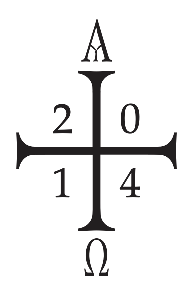 |
12. When the cutting of the cross and of the other signs has been completed, the Priest may insert five grains of incense into the candle in the form of a cross, meanwhile saying:
|
13. Where, because of difficulties that may occur, a fire is not lit, the blessing of fire is adapted to the circumstances. When the people are gathered in the church as on other occasions, the Priest comes to the door of the church, along with the ministers carrying the paschal candle. The people, insofar as is possible, turn to face the Priest.
The greeting and address take place as in no. 9 above; then the fire is blessed and the candle is prepared, as above in nos. 10-12.
14. The Priest lights the paschal candle from the new fire, saying:
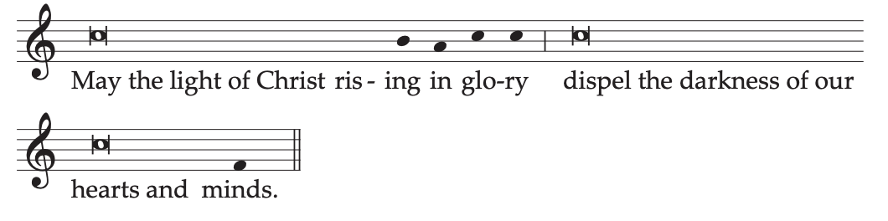
May the light of Christ rising in glory
dispel the darkness of our hearts and minds.
As regards the preceding elements, Conferences of Bishops may also establish other forms more adapted to the culture of the different peoples.
Procession
15. When the candle has been lit, one of the ministers takes burning coals from the fire and places them in the thurible, and the Priest puts incense into it in the usual way. The Deacon or, if there is no Deacon, another suitable minister, takes the paschal candle and a procession forms. The thurifer with the smoking thurible precedes the Deacon or other minister who carries the paschal candle. After them follows the Priest with the ministers and the people, all holding in their hands unlit candles.
At the door of the church the Deacon, standing and raising up the candle, sings:
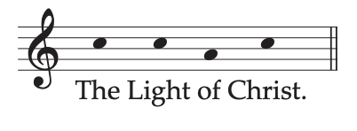
Or:
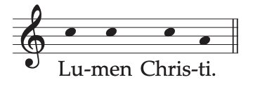
The Light of Christ.
And all reply:
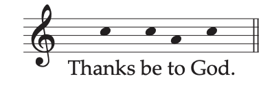
Or:
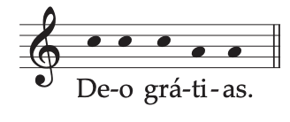
Thanks be to God.
The Priest lights his candle from the flame of the paschal candle.
16. Then the Deacon moves forward to the middle of the church and, standing and raising up the candle, sings a second time:
The Light of Christ.
And all reply:
Thanks be to God.
All light their candles from the flame of the paschal candle and continue in procession.
17.When the Deacon arrives before the altar, he stands facing the people, raises up the candle and sings a third time:
The Light of Christ.
And all reply:
Thanks be to God.
Then the Deacon places the paschal candle on a large candlestand prepared next to the ambo or in the middle of the sanctuary.
And lights are lit throughout the church, except for the altar candles.
The Easter Proclamation
(Exsultet)
18. Arriving at the altar, the Priest goes to his chair, gives his candle to a minister, puts incense into the thurible and blesses the incense as at the Gospel at Mass. The Deacon goes to the Priest and saying, Your blessing, Father, asks for and receives a blessing from the Priest, who says in a low voice:
May the Lord be in your heart and on your lips,
that you may proclaim his paschal praise worthily and well,
in the name of the Father and of the Son, ✠ and of the Holy Spirit.
The Deacon replies: Amen.
This blessing is omitted if the Proclamation is made by someone who is not a Deacon.
19. The Deacon, after incensing the book and the candle, proclaims the Easter Proclamation (Exsultet) at the ambo or at a lectern, with all standing and holding lighted candles in their hands.
The Easter Proclamation may be made, in the absence of a Deacon, by the Priest himself or by another concelebrating Priest. If, however, because of necessity, a lay cantor sings the Proclamation, the words Therefore, dearest friends up to the end of the invitation are omitted, along with the greeting The Lord be with you.
The Proclamation may also be sung in the shorter form.
Long - Chant Long - Text Short - Chant Short - Text
Longer Form of the Easter Proclamation
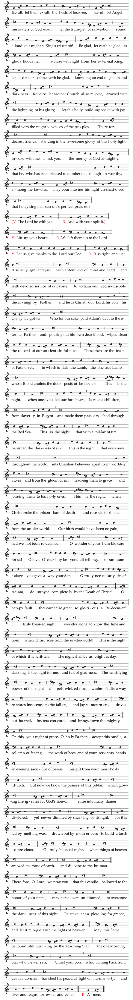
Continue to Liturgy of the Word
Text without music:
Longer Form of the Easter Proclamation
Exult, let them exult, the hosts of heaven,
exult, let Angel ministers of God exult,
let the trumpet of salvation
sound aloud our mighty King’s triumph!
Be glad, let earth be glad, as glory floods her,
ablaze with light from her eternal King,
let all corners of the earth be glad,
knowing an end to gloom and darkness.
Rejoice, let Mother Church also rejoice,
arrayed with the lightning of his glory,
let this holy building shake with joy,
filled with the mighty voices of the peoples.
(Therefore, dearest friends
standing in the awesome glory of this holy light,
invoke with me, I ask you,
the mercy of God almighty,
that he, who has been pleased to number me,
though unworthy, among the Levites,
may pour into me his light unshadowed,
that I may sing this candle’s perfect praises).
(V. The Lord be with you.
R. And with your spirit.)
V. Lift up your hearts.
R. We lift them up to the Lord.
V. Let us give thanks to the Lord our God.
R. It is right and just.
It is truly right and just,
with ardent love of mind and heart
and with devoted service of our voice,
to acclaim our God invisible, the almighty Father,
and Jesus Christ, our Lord, his Son, his Only Begotten.
Who for our sake paid Adam’s debt to the eternal Father,
and, pouring out his own dear Blood,
wiped clean the record of our ancient sinfulness.
These, then, are the feasts of Passover,
in which is slain the Lamb, the one true Lamb,
whose Blood anoints the doorposts of believers.
This is the night,
when once you led our forebears, Israel’s children,
from slavery in Egypt
and made them pass dry-shod through the Red Sea.
This is the night
that with a pillar of fire
banished the darkness of sin.
This is the night
that even now, throughout the world,
sets Christian believers apart from worldly vices
and from the gloom of sin,
leading them to grace
and joining them to his holy ones.
This is the night,
when Christ broke the prison-bars of death
and rose victorious from the underworld.
Our birth would have been no gain,
had we not been redeemed.
O wonder of your humble care for us!
O love, O charity beyond all telling,
to ransom a slave you gave away your Son!
O truly necessary sin of Adam,
destroyed completely by the Death of Christ!
O happy fault
that earned so great, so glorious a Redeemer!
O truly blessed night,
worthy alone to know the time and hour
when Christ rose from the underworld!
This is the night
of which it is written:
The night shall be as bright as day,
dazzling is the night for me,
and full of gladness.
The sanctifying power of this night
dispels wickedness, washes faults away,
restores innocence to the fallen, and joy to mourners,
drives out hatred, fosters concord, and brings down the mighty.
On this, your night of grace, O holy Father,
accept this candle, a solemn offering,
the work of bees and of your servants’ hands,
an evening sacrifice of praise,
this gift from your most holy Church.
But now we know the praises of this pillar,
which glowing fire ignites for God’s honor,
a fire into many flames divided,
yet never dimmed by sharing of its light,
for it is fed by melting wax,
drawn out by mother bees
to build a torch so precious.
O truly blessed night,
when things of heaven are wed to those of earth,
and divine to the human.
Therefore, O Lord,
we pray you that this candle,
hallowed to the honor of your name,
may persevere undimmed,
to overcome the darkness of this night.
Receive it as a pleasing fragrance,
and let it mingle with the lights of heaven.
May this flame be found still burning
by the Morning Star:
the one Morning Star who never sets,
Christ your Son,
who, coming back from death’s domain,
has shed his peaceful light on humanity,
and lives and reigns for ever and ever.
R. Amen.
Continue to Liturgy of the Word
Shorter Form of the Easter Proclamation
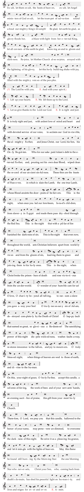
Continue to Liturgy of the Word
Text without music:
Shorter Form of the Easter Proclamation
Exult, let them exult, the hosts of heaven,
exult, let Angel ministers of God exult,
let the trumpet of salvation
sound aloud our mighty King’s triumph!
Be glad, let earth be glad, as glory floods her,
ablaze with light from her eternal King,
let all corners of the earth be glad,
knowing an end to gloom and darkness.
Rejoice, let Mother Church also rejoice,
arrayed with the lightning of his glory,
let this holy building shake with joy,
filled with the mighty voices of the peoples.
(V. The Lord be with you.
R. And with your spirit.)
V. Lift up your hearts.
R. We lift them up to the Lord.
V. Let us give thanks to the Lord our God.
R. It is right and just.
It is truly right and just,
with ardent love of mind and heart
and with devoted service of our voice,
to acclaim our God invisible, the almighty Father,
and Jesus Christ, our Lord, his Son, his Only Begotten.
Who for our sake paid Adam’s debt to the eternal Father,
and, pouring out his own dear Blood,
wiped clean the record of our ancient sinfulness.
These then are the feasts of Passover,
in which is slain the Lamb, the one true Lamb,
whose Blood anoints the doorposts of believers.
This is the night,
when once you led our forebears, Israel’s children,
from slavery in Egypt
and made them pass dry-shod through the Red Sea.
This is the night
that with a pillar of fire
banished the darkness of sin.
This is the night
that which even now, throughout the world,
sets Christian believers apart from worldly vices
and from the gloom of sin,
leading them to grace
and joining them to his holy ones.
This is the night,
when Christ broke the prison-bars of death
and rose victorious from the underworld.
O wonder of your humble care for us!
O love, O charity beyond all telling,
to ransom a slave you gave away your Son!
O truly necessary sin of Adam,
destroyed completely by the Death of Christ!
O happy fault
that earned so great, so glorious a Redeemer!
The sanctifying power of this night
dispels wickedness, washes faults away,
restores innocence to the fallen, and joy to mourners.
O truly blessed night,
when things of heaven are wed to those of earth
and divine to the human.
On this, your night of grace, O holy Father,
accept this candle, a solemn offering,
the work of bees and of your servants’ hands,
an evening sacrifice of praise,
this gift from your most holy Church
Therefore, O Lord,
we pray you that this candle,
hallowed to the honor of your name,
may persevere undimmed,
to overcome the darkness of this night.
Receive it as a pleasing fragrance,
and let it mingle with the lights of heaven.
May this flame be found still burning
by the Morning Star:
the one Morning Star who never sets,
Christ your Son,
who, coming back from death’s domain,
has shed his peaceful light on humanity,
and lives and reigns for ever and ever.
R. Amen.
20. In this Vigil, the mother of all Vigils, nine readings are provided, namely seven from the Old Testament and two from the New (the Epistle and Gospel), all of which should be read whenever this can be done, so that the character of the Vigil, which demands an extended period of time, may be preserved.
21. Nevertheless, where more serious pastoral circumstances demand it, the number of readings from the Old Testament may be reduced, always bearing in mind that the reading of the Word of God is a fundamental part of this Easter Vigil. At least three readings should be read from the Old Testament, both from the Law and from the Prophets, and their respective Responsorial Psalms should be sung. Never, moreover, should the reading of chapter 14 of Exodus with its canticle be omitted.
22. After setting aside their candles, all sit. Before the readings begin, the Priest instructs the people in these or similar words:
Dear brethren (brothers and sisters),
now that we have begun our solemn Vigil,
let us listen with quiet hearts to the Word of God.
Let us meditate on how God in times past saved his people
and in these, the last days, has sent us his Son as our Redeemer.
Let us pray that our God may complete this paschal work of salvation
by the fullness of redemption.
23. Then the readings follow. A reader goes to the ambo and proclaims the reading. Afterwards a psalmist or a cantor sings or says the Psalm with the people making the response. Then all rise, the Priest says, Let us pray and, after all have prayed for a while in silence, he says the prayer corresponding to the reading. In place of the Responsorial Psalm a period of sacred silence may be observed, in which case the pause after Let us pray is omitted.
Prayers after the Readings
24. After the first reading (On creation: Gn 1: 1–2: 2 or 1: 1, 26-31a) and the Psalm (104 [103] or 33 [32]).
Let us pray.
Almighty ever-living God,
who are wonderful in the ordering of all your works,
may those you have redeemed understand
that there exists nothing more marvelous
than the world’s creation in the beginning
except that, at the end of the ages,
Christ our Passover has been sacrificed.
Who lives and reigns for ever and ever.
R. Amen.
Or, On the creation of man:
O God, who wonderfully created human nature
and still more wonderfully redeemed it,
grant us, we pray,
to set our minds against the enticements of sin,
that we may merit to attain eternal joys.
Through Christ our Lord.
R. Amen.
25. After the second reading (On Abraham’s sacrifice: Gn 22: 1-18 or 1-2, 9a, 10-13, 15-18) and the Psalm (16 [15]).
Let us pray.
O God, supreme Father of the faithful,
who increase the children of your promise
by pouring out the grace of adoption
throughout the whole world
and who through the Paschal Mystery
make your servant Abraham father of nations,
as once you swore,
grant, we pray,
that your peoples may enter worthily
into the grace to which you call them.
Through Christ our Lord.
R. Amen.
26. After the third reading (On the passage through the Red Sea: Ex 14: 15-15: 1) and its canticle (Ex 15).
Let us pray.
O God, whose ancient wonders
remain undimmed in splendor even in our day,
for what you once bestowed on a single people,
freeing them from Pharaoh’s persecution
by the power of your right hand
now you bring about as the salvation of the nations
through the waters of rebirth,
grant, we pray, that the whole world
may become children of Abraham
and inherit the dignity of Israel’s birthright.
Through Christ our Lord.
R. Amen.
Or:
O God, who by the light of the New Testament
have unlocked the meaning
of wonders worked in former times,
so that the Red Sea prefigures the sacred font
and the nation delivered from slavery
foreshadows the Christian people,
grant, we pray, that all nations,
obtaining the privilege of Israel by merit of faith,
may be reborn by partaking of your Spirit.
Through Christ our Lord.
R. Amen.
27. After the fourth reading (On the new Jerusalem: Is 54: 5-14) and the Psalm (30 [29]).
Let us pray.
Almighty ever-living God,
surpass, for the honor of your name,
what you pledged to the Patriarchs by reason of their faith,
and through sacred adoption increase the children of your promise,
so that what the Saints of old never doubted would come to pass
your Church may now see in great part fulfilled.
Through Christ our Lord.
R. Amen.
Alternatively, other prayers may be used from among those which follow the readings that have been omitted.
28. After the fifth reading (On salvation freely offered to all: Is 55: 1-11) and the canticle (Is 12).
Let us pray.
Almighty ever-living God,
sole hope of the world,
who by the preaching of your Prophets
unveiled the mysteries of this present age,
graciously increase the longing of your people,
for only at the prompting of your grace
do the faithful progress in any kind of virtue.
Through Christ our Lord.
R. Amen.
29. After the sixth reading (On the fountain of wisdom: Bar 3: 9-15, 31–4: 4) and the Psalm (19 [18]).
Let us pray.
O God, who constantly increase your Church
by your call to the nations,
graciously grant
to those you wash clean in the waters of Baptism
the assurance of your unfailing protection.
Through Christ our Lord.
R. Amen.
30. After the seventh reading (On a new heart and new spirit: Ez 36: 16-28) and the Psalm (42-43 [41-42]).
Let us pray.
O God of unchanging power and eternal light,
look with favor on the wondrous mystery of the whole Church
and serenely accomplish the work of human salvation,
which you planned from all eternity;
may the whole world know and see
that what was cast down is raised up,
what had become old is made new,
and all things are restored to integrity through Christ,
just as by him they came into being.
Who lives and reigns for ever and ever.
R. Amen.
Or:
O God, who by the pages of both Testaments
instruct and prepare us to celebrate the Paschal Mystery,
grant that we may comprehend your mercy,
so that the gifts we receive from you this night
may confirm our hope of the gifts to come.
Through Christ our Lord.
R. Amen.
31. After the last reading from the Old Testament with its Responsorial Psalm and its prayer, the altar candles are lit, and the Priest intones the hymn Gloria in excelsis Deo (Glory to God in the highest), which is taken up by all, while bells are rung, according to local custom.
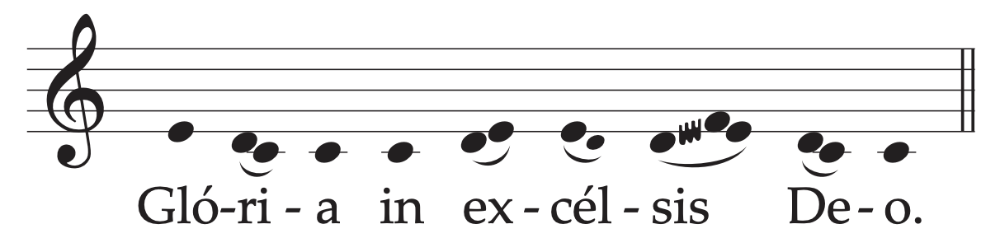
32. When the hymn is concluded, the Priest says the Collect in the usual way.
Let us pray.
O God, who make this most sacred night radiant
with the glory of the Lord’s Resurrection,
stir up in your Church a spirit of adoption,
so that, renewed in body and mind,
we may render you undivided service.
Through our Lord Jesus Christ, your Son,
who lives and reigns with you in the unity of the Holy Spirit,
one God, for ever and ever.
33. Then the reader proclaims the reading from the Apostle.
34. After the Epistle has been read, all rise, then the Priest solemnly intones the Alleluia three times, raising his voice by a step each time, with all repeating it. If necessary, the psalmist intones the Alleluia.
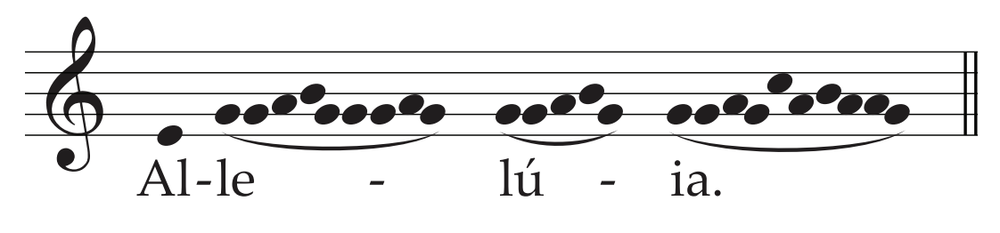
Then the psalmist or cantor proclaims Psalm 118 (117) with the people responding Alleluia.
35. The Priest, in the usual way, puts incense in the thurible and blesses the Deacon. At the Gospel lights are not carried, but only incense.
36. After the Gospel, the Homily, even if brief, is not to be omitted.
37. After the Homily the Baptismal Liturgy begins. The Priest goes with the ministers to the baptismal font, if this can be seen by the faithful. Otherwise a vessel with water is placed in the sanctuary.
38. Catechumens, if there are any, are called forward and presented by their godparents in front of the assembled Church or, if they are small children, are carried by their parents and godparents.
39. Then, if there is to be a procession to the baptistery or to the font, it forms immediately. A minister with the paschal candle leads off, and those to be baptized follow him with their godparents, then the ministers, the Deacon, and the Priest. During the procession, the Litany (no. 43) is sung. When the Litany is completed, the Priest gives the address (no. 40).
40. If, however, the Baptismal Liturgy takes place in the sanctuary, the Priest immediately makes an introductory statement in these or similar words.
If there are candidates to be baptized:
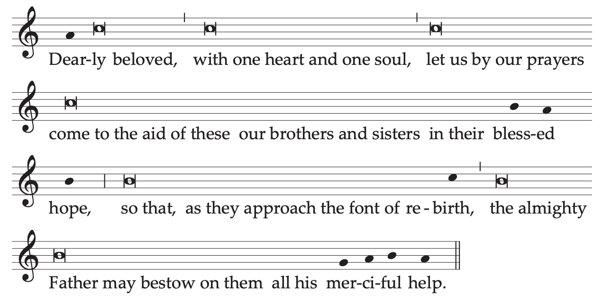
Dearly beloved,
with one heart and one soul, let us by our prayers
come to the aid of these our brothers and sisters in their blessed hope,
so that, as they approach the font of rebirth,
the almighty Father may bestow on them
all his merciful help.
If the font is to be blessed, but no one is to be baptized:
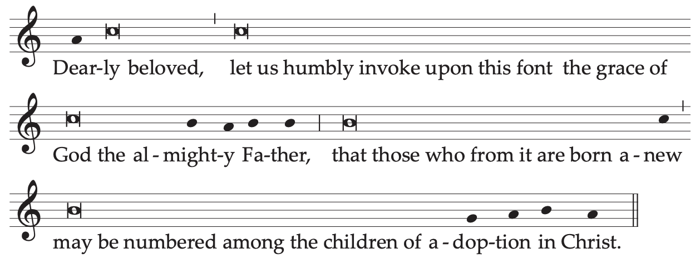
Dearly beloved,
let us humbly invoke upon this font
the grace of God the almighty Father,
that those who from it are born anew
may be numbered among the children of adoption in Christ.
41. The Litany is sung by two cantors, with all standing (because it is Easter Time) and responding.
If, however, there is to be a procession of some length to the baptistery, the Litany is sung during the procession; in this case, those to be baptized are called forward before the procession begins, and the procession takes place led by the paschal candle, followed by the catechumens with their godparents, then the ministers, the Deacon, and the Priest. The address should occur before the Blessing of Water.
42. If no one is to be baptized and the font is not to be blessed, the Litany is omitted, and the Blessing of Water (no. 54) takes place at once.
43. In the Litany the names of some Saints may be added, especially the Titular Saint of the church and the Patron Saints of the place and of those to be baptized.
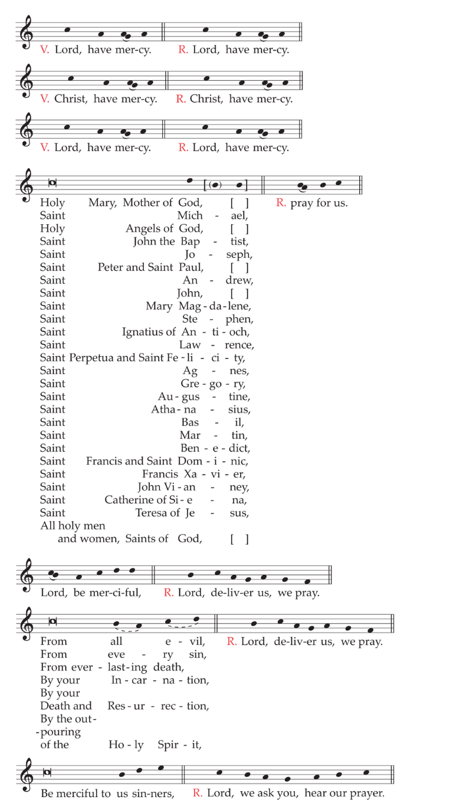
If there are candidates to be baptized
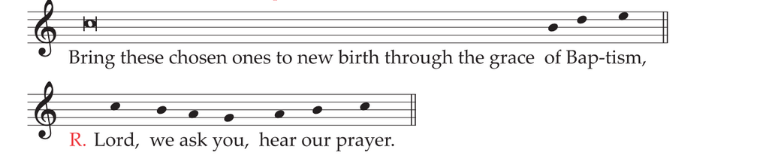
If there is no one to be baptized
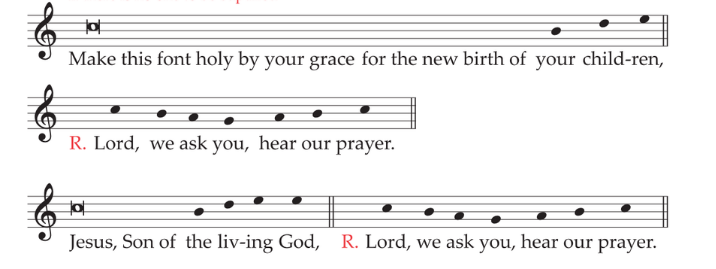
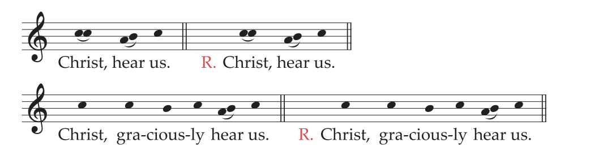
If there are candidates to be baptized, the Priest, with hands extended, says the following prayer:
Almighty ever-living God,
be present by the mysteries of your great love
and send forth the spirit of adoption
to create the new peoples
brought to birth for you in the font of Baptism,
so that what is to be carried out by our humble service
may be brought to fulfillment by your mighty power.
Through Christ our Lord.
R. Amen.
Blessing of Baptismal Water
44. The Priest then blesses the baptismal water, saying the following prayer with hands extended:
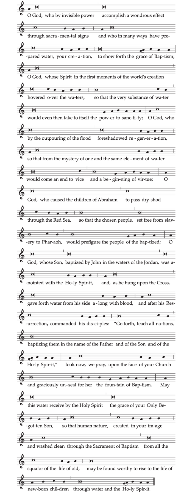
And, if appropriate, lowering the paschal candle into the water either once or three times, he continues:
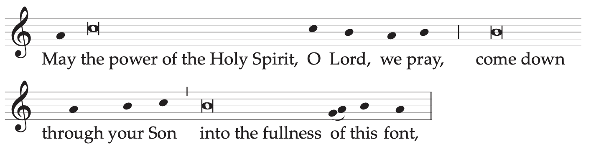
and, holding the candle in the water, he continues:
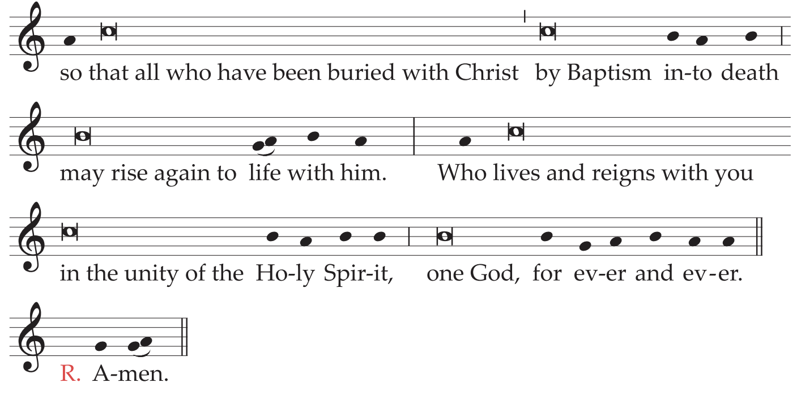
45. Then the candle is lifted out of the water, as the people acclaim:
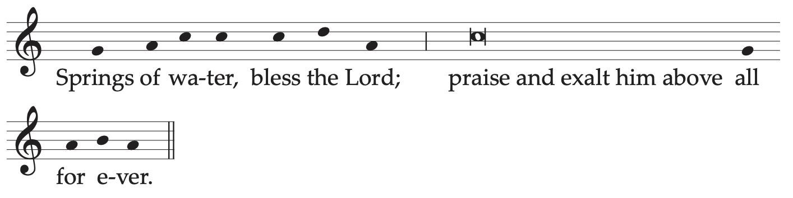
Text without music:
46. The Priest then blesses the baptismal water, saying the following prayer with hands extended:
O God, who by invisible power
accomplish a wondrous effect
through sacramental signs
and who in many ways have prepared water, your creation,
to show forth the grace of Baptism;
O God, whose Spirit
in the first moments of the world’s creation
hovered over the waters,
so that the very substance of water
would even then take to itself the power to sanctify;
O God, who by the outpouring of the flood
foreshadowed regeneration,
so that from the mystery of one and the same element of water
would come an end to vice and a beginning of virtue;
O God, who caused the children of Abraham
to pass dry-shod through the Red Sea,
so that the chosen people,
set free from slavery to Pharaoh,
would prefigure the people of the baptized;
O God, whose Son,
baptized by John in the waters of the Jordan,
was anointed with the Holy Spirit,
and, as he hung upon the Cross,
gave forth water from his side along with blood,
and after his Resurrection, commanded his disciples:
“Go forth, teach all nations, baptizing them
in the name of the Father and of the Son and of the Holy Spirit,”
look now, we pray, upon the face of your Church
and graciously unseal for her the fountain of Baptism.
May this water receive by the Holy Spirit
the grace of your Only Begotten Son,
so that human nature, created in your image
and washed clean through the Sacrament of Baptism
from all the squalor of the life of old,
may be found worthy to rise to the life of newborn children
through water and the Holy Spirit.
And, if appropriate, lowering the paschal candle into the water either once or three times, he continues:
May the power of the Holy Spirit,
O Lord, we pray,
come down through your Son
into the fullness of this font,
and, holding the candle in the water, he continues:
so that all who have been buried with Christ
by Baptism into death
may rise again to life with him.
Who lives and reigns with you in the unity of the Holy Spirit,
one God, for ever and ever.
R. Amen.
47. Then the candle is lifted out of the water, as the people acclaim:
Springs of water, bless the Lord;
praise and exalt him above all for ever.
48. After the blessing of baptismal water and the acclamation of the people, the Priest, standing, puts the prescribed questions to the adults and the parents or godparents of the children, as is set out in the respective Rites of the Roman Ritual, in order for them to make the required renunciation.
If the anointing of the adults with the Oil of Catechumens has not taken place beforehand, as part of the immediately preparatory rites, it occurs at this moment.
49. Then the Priest questions the adults individually about the faith and, if there are children to be baptized, he requests the triple profession of faith from all the parents and godparents together, as is indicated in the respective Rites.
Where many are to be baptized on this night, it is possible to arrange the rite so that, immediately after the response of those to be baptized and of the godparents and the parents, the Celebrant asks for and receives the renewal of baptismal promises of all present.
50. When the interrogation is concluded, the Priest baptizes the adult elect and the children
51. After the Baptism, the Priest anoints the infants with chrism. A white garment is given to each, whether adults or children. Then the Priest or Deacon receives the paschal candle from the hand of the minister, and the candles of the newly baptized are lighted. For infants the rite of Ephphetha is omitted.
52. Afterwards, unless the baptismal washing and the other explanatory rites have occurred in the sanctuary, a procession returns to the sanctuary, formed as before, with the newly baptized or the godparents or parents carrying lighted candles. During this procession, the baptismal canticle Vidi aquam (I saw water) or another appropriate chant is sung (no. 56).
53. If adults have been baptized, the Bishop or, in his absence, the Priest who has conferred Baptism, should at once administer the Sacrament of Confirmation to them in the sanctuary, as is indicated in the Roman Pontifical or Roman Ritual.
The Blessing of Water
54. If no one present is to be baptized and the font is not to be blessed, the Priest introduces the faithful to the blessing of water, saying:
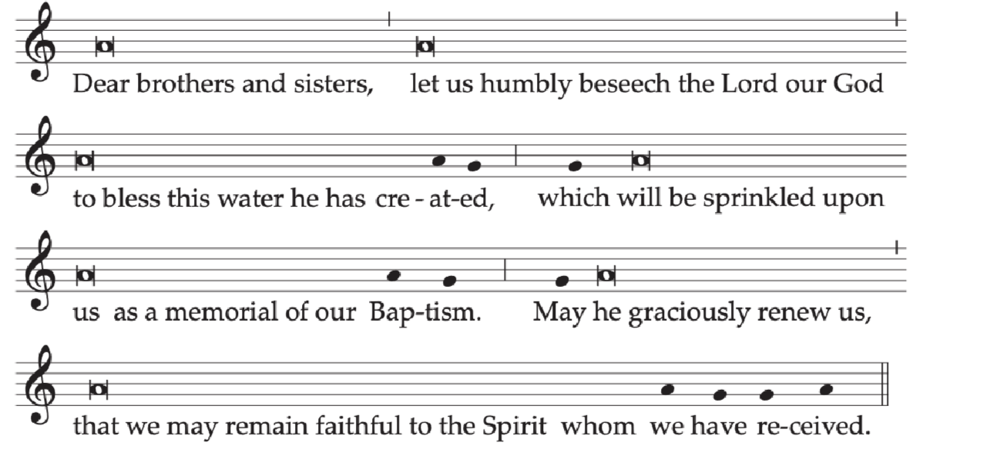
And after a brief pause in silence, he proclaims the following prayer with hands extended:
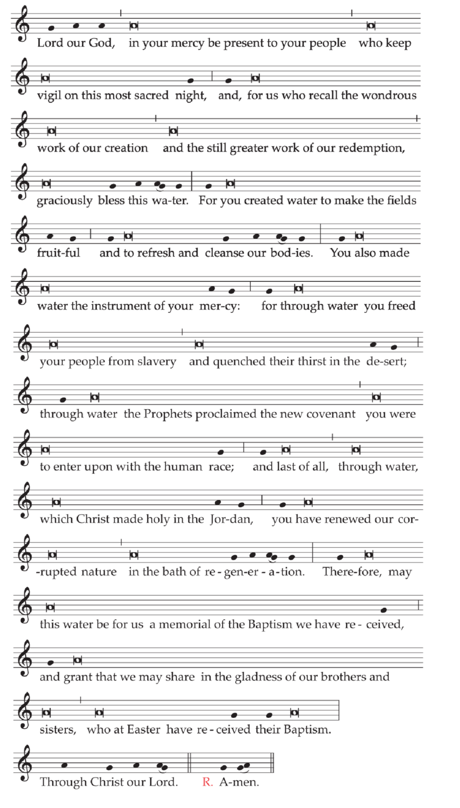
Text without music:
Dear brothers and sisters,
let us humbly beseech the Lord our God
to bless this water he has created,
which will be sprinkled upon us
as a memorial of our Baptism.
May he graciously renew us,
that we may remain faithful to the Spirit
whom we have received.
And after a brief pause in silence, he proclaims the following prayer with hands extended:
Lord our God,
in your mercy be present to your people
who keep vigil on this most sacred night,
and, for us who recall the wondrous work of our creation
and the still greater work of our redemption,
graciously bless this water.
For you created water to make the fields fruitful
and to refresh and cleanse our bodies.
You also made water the instrument of your mercy:
for through water you freed your people from slavery
and quenched their thirst in the desert;
through water the Prophets proclaimed the new covenant
you were to enter upon with the human race;
and last of all,
through water, which Christ made holy in the Jordan,
you have renewed our corrupted nature
in the bath of regeneration.
Therefore, may this water be for us
a memorial of the Baptism we have received,
and grant that we may share
in the gladness of our brothers and sisters,
who at Easter have received their Baptism.
Through Christ our Lord.
R. Amen.
The Renewal of Baptismal Promises
55. When the Rite of Baptism (and Confirmation) has been completed or, if this has not taken place, after the blessing of water, all stand, holding lighted candles in their hands, and renew the promise of baptismal faith, unless this has already been done together with those to be baptized (cf. no. 49).
The Priest addresses the faithful in these or similar words:
Dear brethren (brothers and sisters), through the Paschal Mystery
we have been buried with Christ in Baptism,
so that we may walk with him in newness of life.
And so, now that our Lenten observance is concluded,
let us renew the promises of Holy Baptism,
by which we once renounced Satan and his works
and promised to serve God in the holy Catholic Church.
And so I ask you:
| Priest: | Do you renounce Satan? |
| All: | I do. |
| Priest: | And all his works? |
| All: | I do. |
| Priest: | And all his empty show? |
| All: | I do. |
| Or: | |
| Priest: | Do you renounce sin, so as to live in the freedom of the children of God? |
| All: | I do. |
| Priest: | Do you renounce the lure of evil,
so that sin may have no mastery over you? |
| All: | I do. |
| Priest: | Do you renounce Satan,
the author and prince of sin? |
| All: | I do. |
If the situation warrants, this second formula may be adapted by Conferences of Bishops according to local needs.
Then the Priest continues:
| Priest: | Do you believe in God,
the Father almighty, Creator of heaven and earth? |
| All: | I do. |
| Priest: | Do you believe in Jesus Christ, his only Son, our Lord,
who was born of the Virgin Mary, suffered death and was buried, rose again from the dead and is seated at the right hand of the Father? |
| All: | I do. |
| Priest: | Do you believe in the Holy Spirit,
the holy Catholic Church, the communion of saints, the forgiveness of sins, the resurrection of the body, and life everlasting? |
| All: | I do. |
And the Priest concludes:
And may almighty God, the Father of our Lord Jesus Christ,
who has given us new birth by water and the Holy Spirit
and bestowed on us forgiveness of our sins,
keep us by his grace,
in Christ Jesus our Lord,
for eternal life.
R. Amen.
56. The Priest sprinkles the people with the blessed water, while all sing:
Antiphon
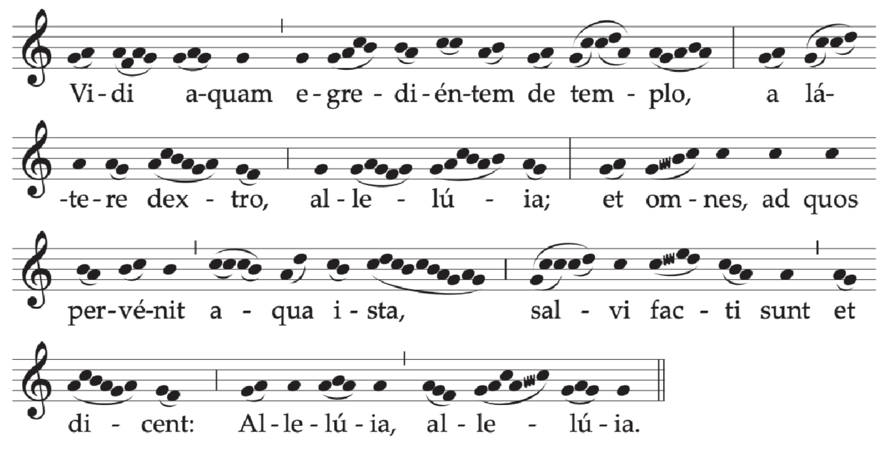
Or:
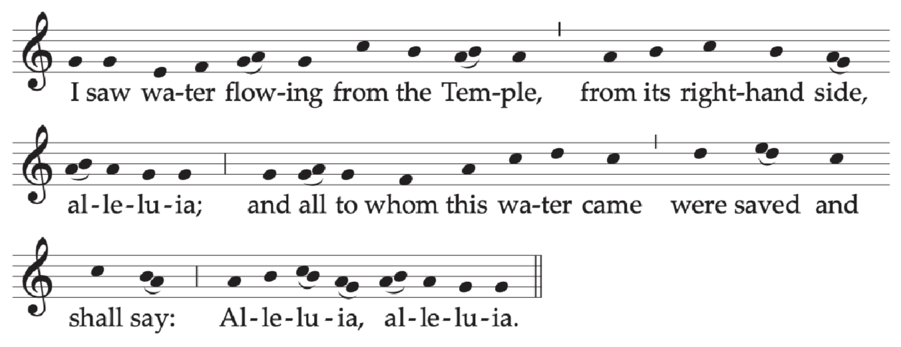
Ant. I saw water flowing from the Temple,
from its right-hand side, alleluia;
and all to whom this water came were saved
and shall say: Alleluia, alleluia.
Another chant that is baptismal in character may also be sung.
57. Meanwhile the newly baptized are led to their place among the faithful.
If the blessing of baptismal water has not taken place in the baptistery, the Deacon and the ministers reverently carry the vessel of water to the font.
If the blessing of the font has not occurred, the blessed water is put aside in an appropriate place.
58. After the sprinkling, the Priest returns to the chair where, omitting the Creed, he directs the Universal Prayer, in which the newly baptized participate for the first time.
59. The Priest goes to the altar and begins the Liturgy of the Eucharist in the usual way.
60. It is desirable that the bread and wine be brought forward by the newly baptized or, if they are children, by their parents or godparents.
61. Prayer over the Offerings
Accept, we ask, O Lord,
the prayers of your people
with the sacrificial offerings,
that what has begun in the paschal mysteries
may, by the working of your power,
bring us to the healing of eternity.
Through Christ our Lord.
62. Preface I of Easter: The Paschal Mystery (...on this night above all...).
63. In the Eucharistic Prayer, a commemoration is made of the baptized and their godparents in accord with the formulas which are found in the Roman Missal and Roman Ritual for each of the Eucharistic Prayers.
64. Before the Ecce Agnus Dei (Behold the Lamb of God), the Priest may briefly address the newly baptized about receiving their first Communion and about the excellence of this great mystery, which is the climax of Initiation and the center of the whole of Christian life.
65. It is desirable that the newly baptized receive Holy Communion under both kinds, together with their godfathers, godmothers, and Catholic parents and spouses, as well as their lay catechists. It is even appropriate that, with the consent of the Diocesan Bishop, where the occasion suggests this, all the faithful be admitted to Holy Communion under both kinds.
66. Communion Antiphon1 Cor 5: 7-8
Christ our Passover has been sacrificed;
therefore let us keep the feast
with the unleavened bread of purity and truth, alleluia.
Psalm 118 (117) may appropriately be sung.
67. Prayer after Communion
Pour out on us, O Lord, the Spirit of your love,
and in your kindness make those you have nourished
by this paschal Sacrament
one in mind and heart.
Through Christ our Lord.
68. Solemn Blessing
May almighty God bless you
through today’s Easter Solemnity
and, in his compassion,
defend you from every assault of sin.
R. Amen.
And may he, who restores you to eternal life
in the Resurrection of his Only Begotten,
endow you with the prize of immortality.
R. Amen.
Now that the days of the Lord’s Passion have drawn to a close,
may you who celebrate the gladness of the Paschal Feast
come with Christ’s help, and exulting in spirit,
to those feasts that are celebrated in eternal joy.
R. Amen.
And may the blessing of almighty God,
the Father, and the Son, ✠ and the Holy Spirit,
come down on you and remain with you forever.
R. Amen.
The final blessing formula from the Rite of Baptism of Adults or of Children may also be used, according to circumstances.
69. To dismiss the people the Deacon or, if there is no Deacon, the Priest himself sings or says:
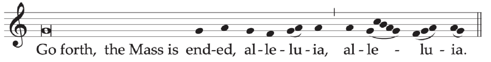
Or:
All reply:
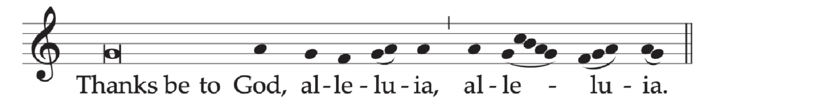
This practice is observed throughout the Octave of Easter.
70. The paschal candle is lit in all the more solemn liturgical celebrations of this period.
At the Mass during the Day
71. Entrance AntiphonCf. Ps 139 (138): 18, 5-6
I have risen, and I am with you still, alleluia.
You have laid your hand upon me, alleluia.
Too wonderful for me, this knowledge, alleluia, alleluia.
Or:Lk 24: 34; cf. Rev 1: 6
The Lord is truly risen, alleluia.
To him be glory and power
for all the ages of eternity, alleluia, alleluia.
The Gloria in excelsis (Glory to God in the highest) is said.
72. Collect
O God, who on this day,
through your Only Begotten Son,
have conquered death
and unlocked for us the path to eternity,
grant, we pray, that we who keep
the solemnity of the Lord’s Resurrection
may, through the renewal brought by your Spirit,
rise up in the light of life.
Through our Lord Jesus Christ, your Son,
who lives and reigns with you in the unity of the Holy Spirit,
God, for ever and ever.
The Creed is said.
However, in Easter Sunday Masses which are celebrated with a congregation, the rite of the renewal of baptismal promises may take place after the Homily, according to the text used at the Easter Vigil. In that case the Creed is omitted.
73. Prayer over the Offerings
Exultant with paschal gladness, O Lord,
we offer the sacrifice
by which your Church
is wondrously reborn and nourished.
Through Christ our Lord.
74. Preface I of Easter, The Paschal Mystery.
When the Roman Canon is used, the proper form of the Communicantes (In communion with those) and Hanc igitur (Therefore, Lord, we pray) are said.
75. Communion Antiphon1 Cor 5: 7-8
Christ our Passover has been sacrificed, alleluia;
therefore let us keep the feast with the unleavened bread
of purity and truth, alleluia, alleluia.
76. Prayer after Communion
Look upon your Church, O God,
with unfailing love and favor,
so that, renewed by the paschal mysteries,
she may come to the glory of the resurrection.
Through Christ our Lord.
77. To impart the blessing at the end of Mass, the Priest may appropriately use the formula of Solemn Blessing for the Mass of the Easter Vigil.
78. For the dismissal of the people, there is sung (as above no. 69) or said:
Go forth, the Mass is ended, alleluia, alleluia.
Or:
Go forth in peace, alleluia, alleluia.
R. Thanks be to God, alleluia, alleluia.
MONDAY WITHIN THE OCTAVE OF EASTER
Entrance AntiphonEx 13: 5, 9
The Lord has led you into a land flowing with milk and honey,
that the law of the Lord may always be on your lips, alleluia.
Or:
The Lord has risen from the dead, as he said;
let us all exult and rejoice,
for he reigns for all eternity, alleluia.
The Gloria in excelsis (Glory to God in the highest) is said.
Collect
O God, who give constant increase
to your Church by new offspring,
grant that your servants may hold fast in their lives
to the Sacrament they have received in faith.
Through our Lord Jesus Christ, your Son,
who lives and reigns with you in the unity of the Holy Spirit,
God, for ever and ever.
Prayer over the Offerings
Accept graciously, O Lord, we pray,
the offerings of your peoples,
that, renewed by confession of your name and by Baptism,
they may attain unending happiness.
Through Christ our Lord.
When the Roman Canon is used, the proper form of the Communicantes (In communion with those) and Hanc igitur (Therefore, Lord, we pray) are said.
Communion AntiphonRom 6: 9
Christ, having risen from the dead, dies now no more;
death will no longer have dominion over him, alleluia.
Prayer after Communion
May the grace of this paschal Sacrament
abound in our minds, we pray, O Lord,
and make those you have set on the way of eternal salvation
worthy of your gifts.
Through Christ our Lord.
TUESDAY WITHIN THE OCTAVE OF EASTER
Entrance AntiphonCf. Sir 15: 3-4
He gave them the water of wisdom to drink;
it will be made strong in them and will not be moved;
it will raise them up for ever, alleluia.
The Gloria in excelsis (Glory to God in the highest) is said.
Collect
O God, who have bestowed on us paschal remedies,
endow your people with heavenly gifts,
so that, possessed of perfect freedom,
they may rejoice in heaven
over what gladdens them now on earth.
Through our Lord Jesus Christ, your Son,
who lives and reigns with you in the unity of the Holy Spirit,
God, for ever and ever.
Prayer over the Offerings
Accept in compassion, Lord, we pray,
the offerings of your family,
that under your protective care
they may never lose what they have received,
but attain the gifts that are eternal.
Through Christ our Lord.
When the Roman Canon is used, the proper form of the Communicantes (In communion with those) and Hanc igitur (Therefore, Lord, we pray) are said.
Communion AntiphonCol 3: 1-2
If you have risen with Christ, seek the things that are above,
where Christ is seated at the right hand of God;
mind the things that are above, alleluia.
Prayer after Communion
Hear us, almighty God,
and, as you have bestowed on your family
the perfect grace of Baptism,
so prepare their hearts
for the reward of eternal happiness.
Through Christ our Lord.
WEDNESDAY WITHIN THE OCTAVE OF EASTER
Entrance AntiphonCf. Mt 25: 34
Come, you blessed of my Father;
receive the kingdom prepared for you
from the foundation of the world, alleluia.
The Gloria in excelsis (Glory to God in the highest) is said.
Collect
O God, who gladden us year by year
with the solemnity of the Lord’s Resurrection,
graciously grant
that, by celebrating these present festivities,
we may merit through them to reach eternal joys.
Through our Lord Jesus Christ, your Son,
who lives and reigns with you in the unity of the Holy Spirit,
God, for ever and ever.
Prayer over the Offerings
Receive, we pray, O Lord,
the sacrifice which has redeemed the human race,
and be pleased to accomplish in us
salvation of mind and body.
Through Christ our Lord.
When the Roman Canon is used, the proper form of the Communicantes (In communion with those) and Hanc igitur (Therefore, Lord, we pray) are said.
Communion AntiphonCf. Lk 24: 35
The disciples recognized the Lord Jesus
in the breaking of the bread, alleluia.
Prayer after Communion
We pray, O Lord,
that the reverent reception of the Sacrament of your Son
may cleanse us from our old ways
and transform us into a new creation.
Through Christ our Lord.
THURSDAY WITHIN THE OCTAVE OF EASTER
Entrance AntiphonWis 10: 20-21
They praised in unison your conquering hand, O Lord,
for wisdom opened mouths that were mute
and gave eloquence to the tongues of infants, alleluia.
The Gloria in excelsis (Glory to God in the highest) is said.
Collect
O God, who have united the many nations
in confessing your name,
grant that those reborn in the font of Baptism
may be one in the faith of their hearts
and the homage of their deeds.
Through our Lord Jesus Christ, your Son,
who lives and reigns with you in the unity of the Holy Spirit,
God, for ever and ever.
Prayer over the Offerings
Graciously be pleased, O Lord,
to accept the sacrificial gifts we offer joyfully
both for those who have been reborn
and in hope of your increased help from heaven.
Through Christ our Lord.
When the Roman Canon is used, the proper form of the Communicantes (In communion with those) and Hanc igitur (Therefore, Lord, we pray) are said.
Communion AntiphonCf. 1 Pt 2: 9
O chosen people, proclaim the mighty works of him,
who called you out of darkness into his wonderful light, alleluia.
Prayer after Communion
Hear, O Lord, our prayers,
that this most holy exchange,
by which you have redeemed us,
may bring your help in this present life
and ensure for us eternal gladness.
Through Christ our Lord.
FRIDAY WITHIN THE OCTAVE OF EASTER
Entrance AntiphonCf. Ps 78 (77): 53
The Lord led his people in hope,
while the sea engulfed their foes, alleluia.
The Gloria in excelsis (Glory to God in the highest) is said.
Collect
Almighty ever-living God,
who gave us the Paschal Mystery
in the covenant you established
for reconciling the human race,
so dispose our minds, we pray,
that what we celebrate by professing the faith
we may express in deeds.
Through our Lord Jesus Christ, your Son,
who lives and reigns with you in the unity of the Holy Spirit,
God, for ever and ever.
Prayer over the Offerings
Perfect within us, O Lord, we pray,
the solemn exchange brought about by these paschal offerings,
that we may be drawn from earthly desires
to a longing for the things of heaven.
Through Christ our Lord.
When the Roman Canon is used, the proper form of the Communicantes (In communion with those) and Hanc igitur (Therefore, Lord, we pray) are said.
Communion AntiphonCf. Jn 21: 12-13
Jesus said to his disciples: Come and eat.
And he took bread and gave it to them, alleluia.
Prayer after Communion
Keep safe, O Lord, we pray,
those whom you have saved by your kindness
that, redeemed by the Passion of your Son,
they may rejoice in his Resurrection.
Who lives and reigns for ever and ever.
SATURDAY WITHIN THE OCTAVE OF EASTER
Entrance AntiphonPs 105 (104): 43
The Lord brought out his people with joy,
his chosen ones with shouts of rejoicing, alleluia.
The Gloria in excelsis (Glory to God in the highest) is said.
Collect
O God, who by the abundance of your grace
give increase to the peoples who believe in you,
look with favor on those you have chosen
and clothe with blessed immortality
those reborn through the Sacrament of Baptism.
Through our Lord Jesus Christ, your Son,
who lives and reigns with you in the unity of the Holy Spirit,
God, for ever and ever.
Prayer over the Offerings
Grant, we pray, O Lord,
that we may always find delight in these paschal mysteries,
so that the renewal constantly at work within us
may be the cause of our unending joy.
Through Christ our Lord.
When the Roman Canon is used, the proper form of the Communicantes (In communion with those) and Hanc igitur (Therefore, Lord, we pray) are said.
Communion AntiphonGal 3: 27
All of you who have been baptized in Christ
have put on Christ, alleluia.
Prayer after Communion
Look with kindness upon your people, O Lord,
and grant, we pray,
that those you were pleased to renew by eternal mysteries
may attain in their flesh
the incorruptible glory of the resurrection.
Through Christ our Lord.
SECOND SUNDAY OF EASTER
(or of Divine Mercy)
Entrance Antiphon1 Pt 2: 2
Like newborn infants, you must long for the pure, spiritual milk,
that in him you may grow to salvation, alleluia.
Or:4 Esdr 2: 36-37
Receive the joy of your glory, giving thanks to God,
who has called you into the heavenly kingdom, alleluia.
The Gloria in excelsis (Glory to God in the highest) is said.
Collect
God of everlasting mercy,
who in the very recurrence of the paschal feast
kindle the faith of the people you have made your own,
increase, we pray, the grace you have bestowed,
that all may grasp and rightly understand
in what font they have been washed,
by whose Spirit they have been reborn,
by whose Blood they have been redeemed.
Through our Lord Jesus Christ, your Son,
who lives and reigns with you in the unity of the Holy Spirit,
God, for ever and ever.
The Creed is said.
Prayer over the Offerings
Accept, O Lord, we pray,
the oblations of your people
(and of those you have brought to new birth),
that, renewed by confession of your name and by Baptism,
they may attain unending happiness.
Through Christ our Lord.
Preface I of Easter (...on this day above all...).
When the Roman Canon is used, the proper form of the Communicantes (In communion with those) and Hanc igitur (Therefore, Lord, we pray) are said.
Communion AntiphonCf. Jn 20: 27
Bring your hand and feel the place of the nails,
and do not be unbelieving but believing, alleluia.
Prayer after Communion
Grant, we pray, almighty God,
that our reception of this paschal Sacrament
may have a continuing effect
in our minds and hearts.
Through Christ our Lord.
A formula of Solemn Blessing may be used.
78. For the dismissal of the people, there is sung (as above no. 69) or said: Go forth, the Mass is ended, alleluia, alleluia. Or: Go forth in peace, alleluia, alleluia. The people respond: Thanks be to God, alleluia, alleluia..
Monday after the Second Sunday of Easter
Entrance AntiphonRom 6: 9
Christ, having risen from the dead, dies now no more;
death will no longer have dominion over him, alleluia.
Collect
Grant, we pray, almighty God,
that we, who have been renewed by paschal remedies,
transcending the likeness of our earthly parentage,
may be transformed in the image of our heavenly maker.
Through our Lord Jesus Christ, your Son,
who lives and reigns with you in the unity of the Holy Spirit,
God, for ever and ever.
Prayer over the Offerings
Receive, O Lord, we pray,
these offerings of your exultant Church,
and, as you have given her cause for such great gladness,
grant also that the gifts we bring
may bear fruit in perpetual happiness.
Through Christ our Lord.
Communion AntiphonJn 20: 19
Jesus stood in the midst of his disciples and said to them:
Peace be with you, alleluia.
Prayer after Communion
Look with kindness upon your people, O Lord,
and grant, we pray,
that those you were pleased to renew by eternal mysteries
may attain in their flesh
the incorruptible glory of the resurrection.
Through Christ our Lord.
Tuesday after the Second Sunday of Easter
Entrance AntiphonRev 19: 7, 6
Let us rejoice and be glad and give glory to God,
for the Lord our God the Almighty reigns, alleluia.
Collect
Enable us, we pray, almighty God,
to proclaim the power of the risen Lord,
that we, who have received the pledge of his gift,
may come to possess all he gives
when it is fully revealed.
Through our Lord Jesus Christ, your Son,
who lives and reigns with you in the unity of the Holy Spirit,
God, for ever and ever.
Prayer over the Offerings
Grant, we pray, O Lord,
that we may always find delight in these paschal mysteries,
so that the renewal constantly at work within us
may be the cause of our unending joy.
Through Christ our Lord.
Communion AntiphonCf. Lk 24: 46, 26
The Christ had to suffer and rise from the dead,
and so enter into his glory, alleluia.
Prayer after Communion
Hear, O Lord, our prayers,
that this most holy exchange,
by which you have redeemed us,
may bring your help in this present life
and ensure for us eternal gladness.
Through Christ our Lord.
Wednesday after the Second Sunday of Easter
Entrance AntiphonCf. Ps 18 (17): 50; 22 (21): 23
I will praise you, Lord, among the nations;
I will tell of your name to my kin, alleluia.
Collect
As we recall year by year the mysteries
by which, through the restoration of its original dignity,
human nature has received the hope of rising again,
we earnestly beseech your mercy, Lord,
that what we celebrate in faith
we may possess in unending love.
Through our Lord Jesus Christ, your Son,
who lives and reigns with you in the unity of the Holy Spirit,
God, for ever and ever.
Prayer over the Offerings
O God, who by the wonderful exchange effected in this sacrifice
have made us partakers of the one supreme Godhead,
grant, we pray,
that, as we have come to know your truth,
we may make it ours by a worthy way of life.
Through Christ our Lord.
Communion AntiphonCf. Jn 15: 16, 19
I have chosen you from the world, says the Lord,
and have appointed you to go and bear fruit,
fruit that will last, alleluia.
Prayer after Communion
Graciously be present to your people, we pray, O Lord,
and lead those you have imbued with heavenly mysteries
to pass from former ways to newness of life.
Through Christ our Lord.
Thursday after the Second Sunday of Easter
Entrance AntiphonCf. Ps 68 (67): 8-9, 20
O God, when you went forth before your people,
marching with them and living among them,
the earth trembled, heavens poured down rain, alleluia.
Collect
O God, who for the salvation of the world
brought about the paschal sacrifice,
be favorable to the supplications of your people,
so that Christ our High Priest, interceding on our behalf,
may by his likeness to ourselves
bring us reconciliation,
and by his equality with you
free us from our sins.
Through our Lord Jesus Christ, your Son,
who lives and reigns with you in the unity of the Holy Spirit,
God, for ever and ever.
Prayer over the Offerings
May our prayers rise up to you, O Lord,
together with the sacrificial offerings,
so that, purified by your graciousness,
we may be conformed to the mysteries of your mighty love.
Through Christ our Lord.
Communion AntiphonMt 28: 20
Behold, I am with you always,
even to the end of the age, alleluia.
Prayer after Communion
Almighty ever-living God,
who restore us to eternal life
in the Resurrection of Christ,
increase in us, we pray, the fruits of this paschal Sacrament
and pour into our hearts the strength of this saving food.
Through Christ our Lord.
Friday after the Second Sunday of Easter
Entrance AntiphonRev 5: 9-10
You have redeemed us, Lord, by your Blood,
from every tribe and tongue and people and nation,
and have made us into a kingdom, priests for our God, alleluia.
Collect
O God, hope and light of the sincere,
we humbly entreat you to dispose our hearts
to offer you worthy prayer
and ever to extol you
by dutiful proclamation of your praise.
Through our Lord Jesus Christ, your Son,
who lives and reigns with you in the unity of the Holy Spirit,
God, for ever and ever.
Prayer over the Offerings
Accept in compassion, Lord, we pray,
the offerings of your family,
that under your protective care
they may never lose what they have received,
but attain the gifts that are eternal.
Through Christ our Lord.
Communion AntiphonRom 4: 25
Christ our Lord was handed over for our transgressions
and was raised again for our justification, alleluia.
Prayer after Communion
Keep safe, O Lord, we pray,
those whom you have saved by your kindness,
that, redeemed by the Passion of your Son,
they may rejoice in his Resurrection.
Who lives and reigns for ever and ever.
Saturday after the Second Sunday of Easter
Entrance AntiphonCf. 1 Pt 2: 9
O chosen people, proclaim the mighty works of him
who called you out of darkness into his wonderful light, alleluia.
Collect
Set aside, O Lord,
the bond of sentence written for us by the law of sin,
which in the Paschal Mystery you canceled
through the Resurrection of Christ your Son.
Who lives and reigns with you in the unity of the Holy Spirit,
one God, for ever and ever.
Or:
O God, who willed that through the paschal mysteries
the gates of mercy should stand open for your faithful,
look upon us and have mercy,
that as we follow, by your gift, the way you desire for us,
so may we never stray from the paths of life.
Through our Lord Jesus Christ, your Son,
who lives and reigns with you in the unity of the Holy Spirit,
God, for ever and ever.
Prayer over the Offerings
Sanctify graciously these gifts, O Lord, we pray,
and, accepting the oblation of this spiritual sacrifice,
make of us an eternal offering to you.
Through Christ our Lord.
Communion AntiphonJn 17: 24
Father, I wish that, where I am,
those you gave me may also be with me,
that they may see the glory that you gave me, alleluia.
Prayer after Communion
We have partaken of the gifts of this sacred mystery,
humbly imploring, O Lord,
that what your Son commanded us to do
in memory of him
may bring us growth in charity.
Through Christ our Lord.
THIRD SUNDAY OF EASTER
Entrance AntiphonCf. Ps 66 (65): 1-2
Cry out with joy to God, all the earth;
O sing to the glory of his name.
O render him glorious praise, alleluia.
The Gloria in excelsis (Glory to God in the highest) is said.
Collect
May your people exult for ever, O God,
in renewed youthfulness of spirit,
so that, rejoicing now in the restored glory of our adoption,
we may look forward in confident hope
to the rejoicing of the day of resurrection.
Through our Lord Jesus Christ, your Son,
who lives and reigns with you in the unity of the Holy Spirit,
God, for ever and ever.
The Creed is said.
Prayer over the Offerings
Receive, O Lord, we pray,
these offerings of your exultant Church,
and, as you have given her cause for such great gladness,
grant also that the gifts we bring
may bear fruit in perpetual happiness.
Through Christ our Lord.
Communion AntiphonLk 24: 35
The disciples recognized the Lord Jesus
in the breaking of the bread, alleluia.
Optional for Year B:Lk 24: 46-47
The Christ had to suffer and on the third day rise from the dead;
in his name repentance and remission of sins
must be preached to all the nations, alleluia.
Optional for Year C:Cf. Jn 21: 12-13
Jesus said to his disciples: Come and eat.
And he took bread and gave it to them, alleluia.
Prayer after Communion
Look with kindness upon your people, O Lord,
and grant, we pray,
that those you were pleased to renew by eternal mysteries
may attain in their flesh
the incorruptible glory of the resurrection.
Through Christ our Lord.
A formula of Solemn Blessing may be used.
Monday after the Third Sunday of Easter
Entrance Antiphon
The Good Shepherd has risen,
who laid down his life for his sheep
and willingly died for his flock, alleluia.
Collect
Grant, we pray, almighty God,
that, putting off our old self with all its ways,
we may live as Christ did,
for through the healing paschal remedies
you have conformed us to his nature.
Who lives and reigns with you in the unity of the Holy Spirit,
God, for ever and ever.
Prayer over the Offerings
May our prayers rise up to you, O Lord,
together with the sacrificial offerings,
so that, purified by your graciousness,
we may be conformed to the mysteries of your mighty love.
Through Christ our Lord.
Communion AntiphonJn 14: 27
Peace I leave with you; my peace I give to you.
Not as the world gives do I give it to you, says the Lord, alleluia.
Prayer after Communion
Almighty ever-living God,
who restore us to eternal life
in the Resurrection of Christ,
increase in us, we pray, the fruits of this paschal Sacrament
and pour into our hearts the strength of this saving food.
Through Christ our Lord.
Tuesday after the Third Sunday of Easter
Entrance AntiphonRev 19: 5; 12: 10
Sing praise to our God,
all you who fear God, both small and great,
for now salvation and strength have come,
and the power of his Christ, alleluia.
Collect
O God, who open wide the gates of the heavenly Kingdom
to those reborn of water and the Holy Spirit,
pour out on your servants
an increase of the grace you have bestowed,
that, having been purged of all sins,
they may lack nothing
that in your kindness you have promised.
Through our Lord Jesus Christ, your Son,
who lives and reigns with you in the unity of the Holy Spirit,
God, for ever and ever.
Prayer over the Offerings
Receive, O Lord, we pray,
these offerings of your exultant Church,
and, as you have given her cause for such great gladness,
grant also that the gifts we bring
may bear fruit in perpetual happiness.
Through Christ our Lord.
Communion AntiphonRom 6: 8
If we have died with Christ,
we believe that we shall also live with Christ, alleluia.
Prayer after Communion
Look with kindness upon your people, O Lord,
and grant, we pray,
that those you were pleased to renew by eternal mysteries
may attain in their flesh
the incorruptible glory of the resurrection.
Through Christ our Lord.
Wednesday after the Third Sunday of Easter
Entrance AntiphonCf. Ps 71 (70): 8, 23
Let my mouth be filled with your praise, that I may sing aloud;
my lips shall shout for joy, when I sing to you, alleluia.
Collect
Be present to your family, O Lord, we pray,
and graciously ensure
those you have endowed with the grace of faith
an eternal share in the Resurrection of your Only Begotten Son.
Who lives and reigns with you in the unity of the Holy Spirit,
God, for ever and ever.
Prayer over the Offerings
Grant, we pray, O Lord,
that we may always find delight in these paschal mysteries,
so that the renewal constantly at work within us
may be the cause of our unending joy.
Through Christ our Lord.
Communion Antiphon
The Lord has risen and shone his light upon us,
whom he has redeemed by his Blood, alleluia.
Prayer after Communion
Hear, O Lord, our prayers,
that this most holy exchange,
by which you have redeemed us,
may bring your help in this present life
and ensure for us eternal gladness.
Through Christ our Lord.
Thursday after the Third Sunday of Easter
Entrance AntiphonCf. Ex 15: 1-2
Let us sing to the Lord, for he has gloriously triumphed.
The Lord is my strength and my might;
he has become my salvation, alleluia.
Collect
Almighty ever-living God,
let us feel your compassion more readily
during these days when, by your gift,
we have known it more fully,
so that those you have freed from the darkness of error
may cling more firmly to the teachings of your truth.
Through our Lord Jesus Christ, your Son,
who lives and reigns with you in the unity of the Holy Spirit,
God, for ever and ever.
Prayer over the Offerings
O God, who by the wonderful exchange effected in this sacrifice
have made us partakers of the one supreme Godhead,
grant, we pray,
that, as we have come to know your truth,
we may make it ours by a worthy way of life.
Through Christ our Lord.
Communion Antiphon2 Cor 5: 15
Christ died for all, that those who live
may live no longer for themselves,
but for him, who died for them and is risen, alleluia.
Prayer after Communion
Graciously be present to your people, we pray, O Lord,
and lead those you have imbued with heavenly mysteries
to pass from former ways to newness of life.
Through Christ our Lord.
Friday after the Third Sunday of Easter
Entrance AntiphonRev 5: 12
Worthy is the Lamb who was slain,
to receive power and divinity,
and wisdom and strength and honor, alleluia.
Collect
Grant, we pray, almighty God,
that we, who have come to know
the grace of the Lord’s Resurrection,
may, through the love of the Spirit,
ourselves rise to newness of life.
Through our Lord Jesus Christ, your Son,
who lives and reigns with you in the unity of the Holy Spirit,
God, for ever and ever.
Prayer over the Offerings
Graciously sanctify these gifts, O Lord, we pray,
and, accepting the oblation of this spiritual sacrifice,
make of us an eternal offering to you.
Through Christ our Lord.
Communion Antiphon
The Crucified is risen from the dead
and has redeemed us, alleluia.
Prayer after Communion
We have partaken of the gifts of this sacred mystery,
humbly imploring, O Lord,
that what your Son commanded us to do
in memory of him
may bring us growth in charity.
Through Christ our Lord.
Saturday after the Third Sunday of Easter
Entrance AntiphonCol 2: 12
You have been buried with Christ in Baptism,
through which you also rose again
by faith in the working of God,
who raised him from the dead, alleluia.
Collect
O God, who in the font of Baptism
have made new those who believe in you,
keep safe those reborn in Christ,
that, defeating every onslaught of error,
they may faithfully preserve the grace of your blessing.
Through our Lord Jesus Christ, your Son,
who lives and reigns with you in the unity of the Holy Spirit,
God, for ever and ever.
Prayer over the Offerings
Accept in compassion, Lord, we pray,
the offerings of your family,
that under your protective care
they may never lose what they have received,
but attain the gifts that are eternal.
Through Christ our Lord.
Communion AntiphonJn 17: 20-21
Father, I pray for them, that they may be one in us,
so that the world may believe it was you who sent me,
says the Lord, alleluia.
Prayer after Communion
Keep safe, O Lord, we pray
those whom you have saved by your kindness,
that, redeemed by the Passion of your Son,
they may rejoice in his Resurrection.
Who lives and reigns for ever and ever.
FOURTH SUNDAY OF EASTER
Entrance AntiphonCf. Ps 33 (32): 5-6
The merciful love of the Lord fills the earth;
by the word of the Lord the heavens were made, alleluia.
The Gloria in excelsis (Glory to God in the highest) is said.
Collect
Almighty ever-living God,
lead us to a share in the joys of heaven,
so that the humble flock may reach
where the brave Shepherd has gone before.
Who lives and reigns with you in the unity of the Holy Spirit,
God, for ever and ever.
The Creed is said.
Prayer over the Offerings
Grant, we pray, O Lord,
that we may always find delight in these paschal mysteries,
so that the renewal constantly at work within us
may be the cause of our unending joy.
Through Christ our Lord.
Communion Antiphon
The Good Shepherd has risen,
who laid down his life for his sheep
and willingly died for his flock, alleluia.
Prayer after Communion
Look upon your flock, kind Shepherd,
and be pleased to settle in eternal pastures
the sheep you have redeemed
by the Precious Blood of your Son.
Who lives and reigns for ever and ever.
A formula of Solemn Blessing may be used.
Monday after the Fourth Sunday of Easter
Entrance AntiphonRom 6: 9
Christ, having risen from the dead, dies now no more;
death will no longer have dominion over him, alleluia.
Collect
O God, perfect light of the blessed,
by whose gift we celebrate the paschal mysteries on earth,
bring us, we pray,
to rejoice in the full measure of your grace
for ages unending.
Through our Lord Jesus Christ, your Son,
who lives and reigns with you in the unity of the Holy Spirit,
God, for ever and ever.
Prayer over the Offerings
Receive, O Lord, we pray,
these offerings of your exultant Church,
and, as you have given her cause for such great gladness,
grant also that the gifts we bring
may bear fruit in perpetual happiness.
Through Christ our Lord.
Communion AntiphonJn 20: 19
Jesus stood in the midst of his disciples
and said to them: Peace be with you, alleluia.
Prayer after Communion
Look with kindness upon your people, O Lord,
and grant, we pray,
that those you were pleased to renew by eternal mysteries
may attain in their flesh
the incorruptible glory of the resurrection.
Through Christ our Lord.
Tuesday after the Fourth Sunday of Easter
Entrance AntiphonRev 19: 7, 6
Let us rejoice and be glad and give glory to God,
for the Lord our God the Almighty reigns, alleluia.
Collect
Grant, we pray, almighty God,
that, celebrating the mysteries of the Lord’s Resurrection,
we may merit to receive the joy of our redemption.
Through our Lord Jesus Christ, your Son,
who lives and reigns with you in the unity of the Holy Spirit,
God, for ever and ever.
Prayer over the Offerings
Grant, we pray, O Lord,
that we may always find delight in these paschal mysteries,
so that the renewal constantly at work within us
may be the cause of our unending joy.
Through Christ our Lord.
Communion AntiphonCf. Lk 24: 46, 26
The Christ had to suffer and rise from the dead,
and so enter into his glory, alleluia.
Prayer after Communion
Hear, O Lord, our prayers,
that this most holy exchange,
by which you have redeemed us,
may bring your help in this present life
and ensure for us eternal gladness.
Through Christ our Lord.
Wednesday after the Fourth Sunday of Easter
Entrance AntiphonCf. Ps 18 (17): 50; 22 (21): 23
I will praise you, Lord, among the nations;
I will tell of your name to my kin, alleluia.
Collect
O God, life of the faithful,
glory of the humble, blessedness of the just,
listen kindly to the prayers
of those who call on you,
that they who thirst for what you generously promise
may always have their fill of your plenty.
Through our Lord Jesus Christ, your Son,
who lives and reigns with you in the unity of the Holy Spirit,
God, for ever and ever.
Prayer over the Offerings
O God, who by the wonderful exchange effected in this sacrifice
have made us partakers of the one supreme Godhead,
grant, we pray,
that, as we have come to know your truth,
we may make it ours by a worthy way of life.
Through Christ our Lord.
Communion AntiphonCf. Jn 15: 16, 19
I have chosen you from the world, says the Lord,
and have appointed you to go out and bear fruit,
fruit that will last, alleluia.
Prayer after Communion
Graciously be present to your people, we pray, O Lord,
and lead those you have imbued with heavenly mysteries
to pass from former ways to newness of life.
Through Christ our Lord.
Thursday after the Fourth Sunday of Easter
Entrance AntiphonCf. Ps 68 (67): 8-9, 20
O God, when you went forth before your people,
marching with them and living among them,
the earth trembled, heavens poured down rain, alleluia.
Collect
O God, who restore human nature
to yet greater dignity than at its beginnings,
look upon the amazing mystery of your loving kindness,
and in those you have chosen to make new
through the wonder of rebirth
may you preserve the gifts
of your enduring grace and blessing.
Through our Lord Jesus Christ, your Son,
who lives and reigns with you in the unity of the Holy Spirit,
God, for ever and ever.
Prayer over the Offerings
May our prayers rise up to you, O Lord,
together with the sacrificial offerings,
so that, purified by your graciousness,
we may be conformed to the mysteries of your mighty love.
Through Christ our Lord.
Communion AntiphonMt 28: 20
Behold, I am with you always,
even to the end of the age, alleluia.
Prayer after Communion
Almighty ever-living God,
who restore us to eternal life
in the Resurrection of Christ,
increase in us, we pray, the fruits of this paschal Sacrament
and pour into our hearts the strength of this saving food.
Through Christ our Lord.
Friday after the Fourth Sunday of Easter
Entrance AntiphonRev 5: 9-10
You have redeemed us, Lord, by your Blood,
from every tribe and tongue and people and nation,
and have made us into a kingdom, priests for our God, alleluia.
Collect
O God, author of our freedom and of our salvation,
listen to the voice of our pleading
and grant that those you have redeemed
by the shedding of your Son’s Blood
may have life through you
and, under your protection,
rejoice for ever unharmed.
Through our Lord Jesus Christ, your Son,
who lives and reigns with you in the unity of the Holy Spirit,
God, for ever and ever.
Prayer over the Offerings
Accept in compassion, Lord, we pray,
the offerings of your family,
that under your protective care
they may never lose what they have received,
but attain the gifts that are eternal.
Through Christ our Lord.
Communion AntiphonRom 4: 25
Christ our Lord was handed over for our transgressions
and was raised again for our justification, alleluia.
Prayer after Communion
Keep safe, O Lord, we pray,
those whom you have saved by your kindness,
that, redeemed by the Passion of your Son,
they may rejoice in his Resurrection.
Who lives and reigns for ever and ever.
Saturday after the Fourth Sunday of Easter
Entrance AntiphonCf. 1 Pt 2: 9
O chosen people, proclaim the mighty works of him
who called you out of darkness into his wonderful light, alleluia.
Collect
O God, who in the celebration of Easter
graciously give to the world
the healing of heavenly remedies,
show benevolence to your Church,
that our present observance
may benefit us for eternal life.
Through our Lord Jesus Christ, your Son,
who lives and reigns with you in the unity of the Holy Spirit,
God, for ever and ever.
Prayer over the Offerings
Graciously sanctify these gifts, O Lord, we pray,
and, accepting the oblation of this spiritual sacrifice,
make of us an eternal offering to you.
Through Christ our Lord.
Communion AntiphonJn 17: 24
Father, I wish that, where I am,
those you gave me may also be with me,
that they may see the glory that you gave me, alleluia.
Prayer after Communion
We have partaken of the gifts of this sacred mystery,
humbly imploring, O Lord,
that what your Son commanded us to do
in memory of him
may bring us growth in charity.
Through Christ our Lord.
FIFTH SUNDAY OF EASTER
Entrance AntiphonCf. Ps 98 (97): 1-2
O sing a new song to the Lord,
for he has worked wonders;
in the sight of the nations
he has shown his deliverance, alleluia.
The Gloria in excelsis (Glory to God in the highest) is said.
Collect
Almighty ever-living God,
constantly accomplish the Paschal Mystery within us,
that those you were pleased to make new in Holy Baptism
may, under your protective care, bear much fruit
and come to the joys of life eternal.
Through our Lord Jesus Christ, your Son,
who lives and reigns with you in the unity of the Holy Spirit,
God, for ever and ever.
The Creed is said.
Prayer over the Offerings
O God, who by the wonderful exchange effected in this sacrifice
have made us partakers of the one supreme Godhead,
grant, we pray,
that, as we have come to know your truth,
we may make it ours by a worthy way of life.
Through Christ our Lord.
Communion AntiphonCf. Jn 15: 1, 5
I am the true vine and you are the branches, says the Lord.
Whoever remains in me, and I in him, bears fruit in plenty, alleluia.
Prayer after Communion
Graciously be present to your people, we pray, O Lord,
and lead those you have imbued with heavenly mysteries
to pass from former ways to newness of life.
Through Christ our Lord.
A formula of Solemn Blessing may be used.
Monday after the Fifth Sunday of Easter
Entrance Antiphon
The Good Shepherd has risen,
who laid down his life for his sheep
and willingly died for his flock, alleluia.
Collect
May your right hand, O Lord, we pray,
encompass your family with perpetual help,
so that, defended from all wickedness
by the Resurrection of your Only Begotten Son,
we may make our way by means of your heavenly gifts.
Through our Lord Jesus Christ, your Son,
who lives and reigns with you in the unity of the Holy Spirit,
God, for ever and ever.
Prayer over the Offerings
May our prayers rise up to you, O Lord,
together with the sacrificial offerings,
so that, purified by your graciousness,
we may be conformed to the mysteries of your mighty love.
Through Christ our Lord.
Communion Antiphon Jn 14: 27
Peace I leave with you; my peace I give to you.
Not as the world gives do I give it to you,
says the Lord, alleluia.
Prayer after Communion
Almighty ever-living God,
who restore us to eternal life
in the Resurrection of Christ,
increase in us, we pray, the fruits of this paschal Sacrament
and pour into our hearts the strength of this saving food.
Through Christ our Lord.
Tuesday after the Fifth Sunday of Easter
Entrance AntiphonRev 19: 5; 12: 10
Sing praise to our God,
all you who fear God, both small and great,
for now salvation and strength have come,
and the power of his Christ, alleluia.
Collect
O God, who restore us to eternal life
in the Resurrection of Christ,
grant your people constancy in faith and hope,
that we may never doubt the promises
of which we have learned from you.
Through our Lord Jesus Christ, your Son,
who lives and reigns with you in the unity of the Holy Spirit,
God, for ever and ever.
Prayer over the Offerings
Receive, O Lord, we pray,
these offerings of your exultant Church,
and, as you have given her cause for such great gladness,
grant also that the gifts we bring
may bear fruit in perpetual happiness.
Through Christ our Lord.
Communion AntiphonRom 6: 8
If we have died with Christ,
we believe that we shall also live with Christ, alleluia.
Prayer after Communion
Look with kindness upon your people, O Lord,
and grant, we pray,
that those you were pleased to renew by eternal mysteries
may attain in their flesh
the incorruptible glory of the resurrection.
Through Christ our Lord.
Wednesday after the Fifth Sunday of Easter
Entrance AntiphonCf. Ps 71 (70): 8, 23
Let my mouth be filled with your praise, that I may sing aloud;
my lips shall shout for joy, when I sing to you, alleluia.
Collect
O God, restorer and lover of innocence,
direct the hearts of your servants towards yourself,
that those you have set free from the darkness of unbelief
may never stray from the light of your truth.
Through our Lord Jesus Christ, your Son,
who lives and reigns with you in the unity of the Holy Spirit,
God, for ever and ever.
Prayer over the Offerings
Grant, we pray, O Lord,
that we may always find delight in these paschal mysteries,
so that the renewal constantly at work within us
may be the cause of our unending joy.
Through Christ our Lord.
Communion Antiphon
The Lord has risen and shone his light upon us,
whom he has redeemed by his Blood, alleluia.
Prayer after Communion
Hear, O Lord, our prayers,
that this most holy exchange,
by which you have redeemed us,
may bring your help in this present life
and ensure for us eternal gladness.
Through Christ our Lord.
Thursday after the Fifth Sunday of Easter
Entrance AntiphonCf. Ex 15: 1-2
Let us sing to the Lord, for he has gloriously triumphed.
The Lord is my strength and my might;
he has become my salvation, alleluia.
Collect
O God, by whose grace,
though sinners, we are made just
and, though pitiable, made blessed,
stand, we pray, by your works,
stand by your gifts,
that those justified by faith
may not lack the courage of perseverance.
Through our Lord Jesus Christ, your Son,
who lives and reigns with you in the unity of the Holy Spirit,
God, for ever and ever.
Prayer over the Offerings
O God, who by the wonderful exchange effected in this sacrifice
have made us partakers of the one supreme Godhead,
grant, we pray,
that, as we have come to know your truth,
we may make it ours by a worthy way of life.
Through Christ our Lord.
Communion Antiphon2 Cor 5: 15
Christ died for all, that those who live
may live no longer for themselves,
but for him who died for them and is risen, alleluia.
Prayer after Communion
Graciously be present to your people, we pray, O Lord,
and lead those you have imbued with heavenly mysteries
to pass from former ways to newness of life.
Through Christ our Lord.
Friday after the Fifth Sunday of Easter
Entrance AntiphonRev 5: 12
Worthy is the Lamb who was slain,
to receive power and divinity,
and wisdom and strength and honor, alleluia.
Collect
Grant us, Lord, we pray,
that, being rightly conformed to the paschal mysteries,
what we celebrate in joy
may protect and save us with perpetual power.
Through our Lord Jesus Christ, your Son,
who lives and reigns with you in the unity of the Holy Spirit,
God, for ever and ever.
Prayer over the Offerings
Graciously sanctify these gifts, O Lord, we pray,
and, accepting the oblation of this spiritual sacrifice,
make of us an eternal offering to you.
Through Christ our Lord.
Communion Antiphon
The Crucified is risen from the dead
and has redeemed us, alleluia.
Prayer after Communion
We have partaken of the gifts of this sacred mystery,
humbly imploring, O Lord,
that what your Son commanded us to do
in memory of him
may bring us growth in charity.
Through Christ our Lord.
Saturday after the Fifth Sunday of Easter
Entrance AntiphonCol 2: 12
You have been buried with Christ in Baptism,
through which you also rose again
by faith in the working of God,
who raised him from the dead, alleluia.
Collect
Almighty and eternal God,
who through the regenerating power of Baptism
have been pleased to confer on us heavenly life,
grant, we pray,
that those you render capable of immortality
by justifying them
may by your guidance
attain the fullness of glory.
Through our Lord Jesus Christ, your Son,
who lives and reigns with you in the unity of the Holy Spirit,
God, for ever and ever.
Prayer over the Offerings
Accept in compassion, Lord, we pray,
the offerings of your family,
that under your protective care
they may never lose what they have received,
but attain the gifts that are eternal.
Through Christ our Lord.
Communion AntiphonJn 17: 20-21
Father, I pray for them, that they may be one in us,
so that the world may believe it was you who sent me,
says the Lord, alleluia.
Prayer after Communion
Keep safe, O Lord, we pray,
those whom you have saved by your kindness,
that, redeemed by the Passion of your Son,
they may rejoice in his Resurrection.
Who lives and reigns for ever and ever.
SIXTH SUNDAY OF EASTER
Entrance AntiphonCf. Is 48: 20
Proclaim a joyful sound and let it be heard;
proclaim to the ends of the earth:
The Lord has freed his people, alleluia.
The Gloria in excelsis (Glory to God in the highest) is said.
Collect
Grant, almighty God,
that we may celebrate with heartfelt devotion these days of joy,
which we keep in honor of the risen Lord,
and that what we relive in remembrance
we may always hold to in what we do.
Through our Lord Jesus Christ, your Son,
who lives and reigns with you in the unity of the Holy Spirit,
God, for ever and ever.
The Creed is said.
Prayer over the Offerings
May our prayers rise up to you, O Lord,
together with the sacrificial offerings,
so that, purified by your graciousness,
we may be conformed to the mysteries of your mighty love.
Through Christ our Lord.
Communion AntiphonJn 14: 15-16
If you love me, keep my commandments, says the Lord,
and I will ask the Father and he will send you another Paraclete,
to abide with you for ever, alleluia.
Prayer after Communion
Almighty ever-living God,
who restore us to eternal life in the Resurrection of Christ,
increase in us, we pray, the fruits of this paschal Sacrament
and pour into our hearts the strength of this saving food.
Through Christ our Lord.
A formula of Solemn Blessing may be used.
Monday after the Sixth Sunday of Easter
Entrance AntiphonRom 6: 9
Christ, having risen from the dead, dies now no more;
death will no longer have dominion over him, alleluia.
Collect
Grant, O merciful God,
that we may experience at all times
the fruit produced by the paschal observances.
Through our Lord Jesus Christ, your Son,
who lives and reigns with you in the unity of the Holy Spirit,
God, for ever and ever.
Prayer over the Offerings
Receive, O Lord, we pray,
these offerings of your exultant Church,
and, as you have given her cause for such great gladness,
grant also that the gifts we bring
may bear fruit in perpetual happiness.
Through Christ our Lord.
Communion AntiphonJn 20: 19
Jesus stood in the midst of his disciples
and said to them: Peace be with you, alleluia.
Prayer after Communion
Look with kindness upon your people, O Lord,
and grant, we pray,
that those you were pleased to renew by eternal mysteries
may attain in their flesh
the incorruptible glory of the resurrection.
Through Christ our Lord.
Tuesday after the Sixth Sunday of Easter
Entrance AntiphonRev 19: 7, 6
Let us rejoice and be glad and give glory to God,
for the Lord our God the Almighty reigns, alleluia.
Collect
Grant, almighty and merciful God,
that we may in truth receive a share
in the Resurrection of Christ your Son.
Who lives and reigns with you in the unity of the Holy Spirit,
God, for ever and ever.
Prayer over the Offerings
Grant, we pray, O Lord,
that we may always find delight in these paschal mysteries,
so that the renewal constantly at work within us
may be the cause of our unending joy.
Through Christ our Lord.
Communion AntiphonCf. Lk 24: 46, 26
The Christ had to suffer and rise from the dead,
and so enter into his glory, alleluia.
Prayer after Communion
Hear, O Lord, our prayers,
that this most holy exchange,
by which you have redeemed us,
may bring your help in this present life
and ensure for us eternal gladness.
Through Christ our Lord.
Wednesday after the Sixth Sunday of Easter
At the Morning Mass
In regions where the Solemnity of the Ascension occurs on the following Sunday, this Mass is also used in the evening.
Entrance AntiphonCf. Ps 18 (17): 50; 22 (21): 23
I will praise you, Lord, among the nations;
I will tell of your name to my kin, alleluia.
Collect
Grant, we pray, O Lord,
that, as we celebrate in mystery
the solemnities of your Son’s Resurrection,
so, too, we may be worthy
to rejoice at his coming with all the Saints.
Through our Lord Jesus Christ, your Son,
who lives and reigns with you in the unity of the Holy Spirit,
God, for ever and ever.
Prayer over the Offerings
O God, who by the wonderful exchange effected in this sacrifice
have made us partakers of the one supreme Godhead,
grant, we pray,
that, as we have come to know your truth,
we may make it ours by a worthy way of life.
Through Christ our Lord.
Communion AntiphonCf. Jn 15: 16, 19
I have chosen you from the world, says the Lord,
and have appointed you to go out and bear fruit,
fruit that will last, alleluia.
Prayer after Communion
Graciously be present to your people, we pray, O Lord,
and lead those you have imbued with heavenly mysteries
to pass from former ways to newness of life.
Through Christ our Lord.
THE ASCENSION OF THE LORD
Vigil Mass During the DayWhere the Solemnity of the Ascension is not to be observed as a Holyday of Obligation, it is assigned to the Seventh Sunday of Easter as its proper day
At the Vigil Mass
This Mass is used on the evening of the day before the Solemnity, either before or after First Vespers (Evening Prayer I) of the Ascension.
Entrance AntiphonPs 68 (67): 33, 35
You kingdoms of the earth, sing to God;
praise the Lord, who ascends above the highest heavens;
his majesty and might are in the skies, alleluia.
The Gloria in excelsis (Glory to God in the highest) is said.
Collect
O God, whose Son today ascended to the heavens
as the Apostles looked on,
grant, we pray, that, in accordance with his promise,
we may be worthy for him to live with us always on earth,
and we with him in heaven.
Who lives and reigns with you in the unity of the Holy Spirit,
God, for ever and ever.
The Creed is said.
Prayer over the Offerings
O God, whose Only Begotten Son, our High Priest,
is seated ever-living at your right hand to intercede for us,
grant that we may approach with confidence the throne of grace
and there obtain your mercy.
Through Christ our Lord.
Preface I or II of the Ascension.
When the Roman Canon is used, the proper form of the Communicantes (In communion with those) is said.
Communion AntiphonCf. Heb 10: 12
Christ, offering a single sacrifice for sins,
is seated for ever at God’s right hand, alleluia.
Prayer after Communion
May the gifts we have received from your altar, Lord,
kindle in our hearts a longing for the heavenly homeland
and cause us to press forward, following in the Savior’s footsteps,
to the place where for our sake he entered before us.
Who lives and reigns for ever and ever.
A formula of Solemn Blessing may be used.
At the Mass during the Day
Entrance AntiphonActs 1: 11
Men of Galilee, why gaze in wonder at the heavens?
This Jesus whom you saw ascending into heaven
will return as you saw him go, alleluia.
The Gloria in excelsis (Glory to God in the highest) is said.
Collect
Gladden us with holy joys, almighty God,
and make us rejoice with devout thanksgiving,
for the Ascension of Christ your Son
is our exaltation,
and, where the Head has gone before in glory,
the Body is called to follow in hope.
Through our Lord Jesus Christ, your Son,
who lives and reigns with you in the unity of the Holy Spirit,
God, for ever and ever.
Or:
Grant, we pray, almighty God,
that we, who believe that your Only Begotten Son, our Redeemer,
ascended this day to the heavens,
may in spirit dwell already in heavenly realms.
Who lives and reigns with you in the unity of the Holy Spirit,
God, for ever and ever.
The Creed is said.
Prayer over the Offerings
We offer sacrifice now in supplication, O Lord,
to honor the wondrous Ascension of your Son:
grant, we pray,
that through this most holy exchange
we, too, may rise up to the heavenly realms.
Through Christ our Lord.
Preface I or II of the Ascension.
When the Roman Canon is used, the proper form of the Communicantes (In communion with those) is said.
Communion AntiphonMt 28: 20
Behold, I am with you always,
even to the end of the age, alleluia.
Prayer after Communion
Almighty ever-living God,
who allow those on earth to celebrate divine mysteries,
grant, we pray,
that Christian hope may draw us onward
to where our nature is united with you.
Through Christ our Lord.
A formula of Solemn Blessing may be used.
Thursday after the Sixth Sunday of Easter
In regions where the Solemnity of the Ascension occurs on the following Sunday.
Entrance AntiphonCf. Ps 68 (67): 8-9, 20
O God, when you went forth before your people,
marching with them and living among them,
the earth trembled, heavens poured down rain, alleluia.
Collect
O God, who made your people
partakers in your redemption,
grant, we pray,
that we may perpetually render thanks
for the Resurrection of the Lord.
Through our Lord Jesus Christ, your Son,
who lives and reigns with you in the unity of the Holy Spirit,
God, for ever and ever.
Prayer over the Offerings
May our prayers rise up to you, O Lord,
together with the sacrificial offerings,
so that, purified by your graciousness,
we may be conformed to the mysteries of your mighty love.
Through Christ our Lord.
Communion AntiphonMt 28: 20
Behold, I am with you always,
even to the end of the age, alleluia.
Prayer after Communion
Almighty ever-living God,
who restore us to eternal life
in the Resurrection of Christ,
increase in us, we pray, the fruits of this paschal Sacrament
and pour into our hearts the strength of this saving food.
Through Christ our Lord.
Friday after the Sixth Sunday of Easter or after the Ascension
Entrance AntiphonRev 5: 9-10
You have redeemed us, Lord, by your Blood
from every tribe and tongue and people and nation,
and have made us into a kingdom, priests for our God, alleluia.
Collect
O God, who restore us to eternal life
in the Resurrection of Christ,
raise us up, we pray, to the author of our salvation,
who is seated at your right hand,
so that, when our Savior comes again in majesty,
those you have given new birth in Baptism
may be clothed with blessed immortality.
Through our Lord Jesus Christ, your Son,
who lives and reigns with you in the unity of the Holy Spirit,
God, for ever and ever.
In regions where the Solemnity of the Ascension is celebrated on the following Sunday:
Hear our prayers, O Lord,
so that what was promised
by the sanctifying power of your Word
may everywhere be accomplished
through the working of the Gospel
and that all your adopted children may attain
what the testimony of truth has foretold.
Through our Lord Jesus Christ, your Son,
who lives and reigns with you in the unity of the Holy Spirit,
God, for ever and ever.
Prayer over the Offerings
Accept in compassion, Lord, we pray,
the offerings of your family,
that under your protective care
they may never lose what they have received,
but attain the gifts that are eternal.
Through Christ our Lord.
Preface of Easter, or of the Ascension.
Communion AntiphonRom 4: 25
Christ our Lord was handed over for our transgressions
and was raised again for our justification, alleluia.
Prayer after Communion
Keep safe, O Lord, we pray,
those whom you have saved by your kindness,
that, redeemed by the Passion of your Son,
they may rejoice in his Resurrection.
Who lives and reigns for ever and ever.
Saturday after the Sixth Sunday of Easter
Entrance AntiphonCf. 1 Pt 2: 9
O chosen people, proclaim the mighty works of him
who called you out of darkness into his wonderful light, alleluia.
Collect
O God, whose Son, at his Ascension to the heavens,
was pleased to promise the Holy Spirit to the Apostles,
grant, we pray,
that, just as they received manifold gifts of heavenly teaching,
so on us, too, you may bestow spiritual gifts.
Through our Lord Jesus Christ, your Son,
who lives and reigns with you in the unity of the Holy Spirit,
God, for ever and ever.
In regions where the Solemnity of the Ascension is celebrated on the following Sunday:
Constantly shape our minds, we pray, O Lord,
by the practice of good works,
that, trying always for what is better,
we may strive to hold ever fast to the Paschal Mystery.
Through our Lord Jesus Christ, your Son,
who lives and reigns with you in the unity of the Holy Spirit,
God, for ever and ever.
Prayer over the Offerings
Graciously sanctify these gifts, O Lord, we pray,
and, accepting the oblation of this spiritual sacrifice,
make of us an eternal offering to you.
Through Christ our Lord.
Preface of Easter, or of the Ascension.
Communion AntiphonJn 17: 24
Father, I wish that, where I am,
those you gave me may also be with me,
that they may see the glory that you gave me, alleluia.
Prayer after Communion
We have partaken of the gifts of this sacred mystery,
humbly imploring, O Lord,
that what your Son commanded us to do in memory of him
may bring us growth in charity.
Through Christ our Lord.
SEVENTH SUNDAY OF EASTER
Entrance AntiphonCf. Ps 27 (26): 7-9
O Lord, hear my voice, for I have called to you;
of you my heart has spoken: Seek his face;
hide not your face from me, alleluia.
The Gloria in excelsis (Glory to God in the highest) is said.
Collect
Graciously hear our supplications, O Lord,
so that we, who believe that the Savior of the human race
is with you in your glory,
may experience, as he promised,
until the end of the world,
his abiding presence among us.
Who lives and reigns with you in the unity of the Holy Spirit,
God, for ever and ever.
The Creed is said.
Prayer over the Offerings
Accept, O Lord, the prayers of your faithful
with the sacrificial offerings,
that through these acts of devotedness
we may pass over to the glory of heaven.
Through Christ our Lord.
Preface of Easter, or of the Ascension.
Communion AntiphonJn 17: 22
Father, I pray that they may be one
as we also are one, alleluia.
Prayer after Communion
Hear us, O God our Savior,
and grant us confidence,
that through these sacred mysteries
there will be accomplished in the body of the whole Church
what has already come to pass in Christ her Head.
Who lives and reigns for ever and ever.
A formula of Solemn Blessing may be used.
Monday after the Seventh Sunday of Easter
Entrance AntiphonActs 1: 8
You will receive the power of the Holy Spirit coming upon you,
and you will be my witnesses,
even to the ends of the earth, alleluia.
Collect
May the power of the Holy Spirit
come to us, we pray, O Lord,
that we may keep your will faithfully in mind
and express it in a devout way of life.
Through our Lord Jesus Christ, your Son,
who lives and reigns with you in the unity of the Holy Spirit,
God, for ever and ever.
Prayer over the Offerings
May this unblemished sacrifice purify us, O Lord,
and impart to our minds
the force of grace from on high.
Through Christ our Lord.
Preface of Easter, or of the Ascension.
Communion AntiphonFROM
I will not leave you orphans, says the Lord;
I will come to you again, and your heart will rejoice, alleluia.
Prayer after Communion
Graciously be present to your people, we pray, O Lord,
and lead those you have imbued with heavenly mysteries
to pass from former ways to newness of life.
Through Christ our Lord.
Tuesday after the Seventh Sunday of Easter
Entrance AntiphonRev 1: 17-18
I am the first and the last,
I was dead and am now alive.
Behold, I am alive for ever and ever, alleluia.
Collect
Grant, we pray, almighty and merciful God,
that the Holy Spirit, coming near
and dwelling graciously within us,
may make of us a perfect temple of his glory.
Through our Lord Jesus Christ, your Son,
who lives and reigns with you in the unity of the Holy Spirit,
God, for ever and ever.
Prayer over the Offerings
Accept, O Lord, the prayers of your faithful
with the sacrificial offerings,
that through these acts of devotedness
we may pass over to the glory of heaven.
Through Christ our Lord.
Preface of Easter, or of the Ascension.
Communion AntiphonJn 14: 26
The Holy Spirit, whom the Father will send in my name,
will teach you all things and remind you of all I have told you,
says the Lord, alleluia.
Prayer after Communion
We have partaken of the gifts of this sacred mystery,
humbly imploring, O Lord,
that what your Son commanded us to do
in memory of him
may bring us growth in charity.
Through Christ our Lord.
Wednesday after the Seventh Sunday of Easter
Entrance AntiphonPs 47 (46): 2
All peoples, clap your hands.
Cry to God with shouts of joy, alleluia.
Collect
Graciously grant to your Church, O merciful God,
that, gathered by the Holy Spirit,
she may be devoted to you with all her heart
and united in purity of intent.
Through our Lord Jesus Christ, your Son,
who lives and reigns with you in the unity of the Holy Spirit,
God, for ever and ever.
Prayer over the Offerings
Accept, O Lord, we pray,
the sacrifices instituted by your commands,
and through the sacred mysteries,
which we celebrate as our dutiful service,
graciously complete the sanctifying work
by which you are pleased to redeem us.
Through Christ our Lord.
Preface of Easter, or of the Ascension.
Communion AntiphonJn 15: 26-27
When the Paraclete comes, whom I will send you,
the Spirit of Truth who proceeds from the Father,
he will bear witness to me,
and you also will bear witness, says the Lord, alleluia.
Prayer after Communion
May our partaking of this divine Sacrament, O Lord,
constantly increase your grace within us,
and, by cleansing us with its power,
make us always ready to receive so great a gift.
Through Christ our Lord.
Thursday after the Seventh Sunday of Easter
Entrance AntiphonHeb 4: 16
With boldness let us approach the throne of grace,
that we may receive mercy
and find grace as a timely help, alleluia.
Collect
May your Spirit, O Lord, we pray,
imbue us powerfully with spiritual gifts,
that he may give us a mind pleasing to you
and graciously conform us to your will.
Through our Lord Jesus Christ, your Son,
who lives and reigns with you in the unity of the Holy Spirit,
God, for ever and ever.
Prayer over the Offerings
Graciously sanctify these gifts, O Lord, we pray,
and, accepting the oblation of this spiritual sacrifice,
make of us an eternal offering to you.
Through Christ our Lord.
Preface of Easter, or of the Ascension.
Communion AntiphonJn 16: 7
I tell you the truth, it is for your good that I go;
for if I do not go away, the Paraclete will not come to you,
says the Lord, alleluia.
Prayer after Communion
May the mysteries we have received, O Lord, we pray,
enlighten us by the instruction they bring
and restore us through our participation in them,
that we may merit the gifts of the Spirit.
Through Christ our Lord.
Friday after the Seventh Sunday of Easter
Entrance AntiphonRev 1: 5-6
Christ loved us and washed us clean of our sins by his Blood,
and made us into a kingdom,
priests for his God and Father, alleluia.
Collect
O God, who by the glorification of your Christ
and the light of the Holy Spirit
have unlocked for us the gates of eternity,
grant, we pray,
that, partaking of so great a gift,
our devotion may grow deeper
and our faith be strengthened.
Through our Lord Jesus Christ, your Son,
who lives and reigns with you in the unity of the Holy Spirit,
God, for ever and ever.
Prayer over the Offerings
Look mercifully, O Lord, we pray,
upon the sacrificial gifts of your people,
and, that they may become acceptable to you,
let the coming of the Holy Spirit
cleanse our consciences.
Through Christ our Lord.
Preface of Easter, or of the Ascension.
Communion AntiphonJn 16: 13
When the Spirit of truth comes,
he will teach you all truth, says the Lord, alleluia.
Prayer after Communion
O God, by whose mysteries
we are cleansed and nourished,
grant, we pray,
that this banquet which you give us
may bring everlasting life.
Through Christ our Lord.
Saturday after the Seventh Sunday of Easter
At the Morning Mass
Entrance AntiphonActs 1: 14
The disciples devoted themselves with one accord to prayer
with the women, and Mary the Mother of Jesus,
and his brethren, alleluia.
Collect
Grant, we pray, almighty God,
that we, who have celebrated the paschal festivities,
may by your gift hold fast to them
in the way that we live our lives.
Through our Lord Jesus Christ, your Son,
who lives and reigns with you in the unity of the Holy Spirit,
God, for ever and ever.
Prayer over the Offerings
May the Holy Spirit coming near, we pray, O Lord,
prepare our minds for the divine Sacrament,
since the Spirit himself is the remission of all sins.
Through Christ our Lord.
Preface of Easter, or of the Ascension.
Communion AntiphonJn 16: 14
The Holy Spirit will glorify me,
for he will take from what is mine and declare it to you,
says the Lord, alleluia.
Prayer after Communion
Hear in your compassion our prayers, O Lord,
that, as we have been brought
from things of the past to new mysteries,
so, with former ways left behind,
we may be made new in holiness of mind.
Through Christ our Lord.
PENTECOST SUNDAY
Vigil Mass (Extended) Vigil Mass (Simple) During the DayAt the Vigil Mass
Extended form
This Vigil Mass may be celebrated on the Saturday evening, either before or after First Vespers (Evening Prayer I) of Pentecost Sunday.
1. In churches where the Vigil Mass is celebrated in an extended form, this may be done as follows
2. a) If First Vespers (Evening Prayer I) celebrated in choir or in common immediately precede Mass, the celebration may begin either from the introductory verse and the hymn (Veni, creator Spiritus) or else from the singing of the Entrance Antiphon with the procession and greeting of the Priest; in either case the Penitential Act is omitted (cf. General Instruction of the Liturgy of the Hours, nos. 94 and 96).
Then the Psalmody prescribed for Vespers follows, up to but not including the Short
Reading.
After the Psalmody, omitting the Penitential Act, and if appropriate, the Kyrie (Lord, have mercy), the Priest says the prayer Grant, we pray, almighty God, that the splendor, as at the Vigil Mass.
3. b) If Mass is begun in the usual way, after the Kyrie (Lord, have mercy), the Priest says the prayer Grant, we pray, almighty God, that the splendor, as at the Vigil Mass.
Then the Priest may address the people in these or similar words:
Dear brethren (brothers and sisters),
we have now begun our Pentecost Vigil,
after the example of the Apostles and disciples,
who with Mary, the Mother of Jesus, persevered in prayer,
awaiting the Spirit promised by the Lord;
like them, let us, too, listen with quiet hearts to the Word of God.
Let us meditate on how many great deeds
God in times past did for his people
and let us pray that the Holy Spirit,
whom the Father sent as the first fruits for those who believe,
may bring to perfection his work in the world.
4. Then follow the readings proposed as options in the Lectionary. A reader goes to the ambo and proclaims the reading. Afterwards a psalmist or a cantor sings or says the Psalm with the people making the response. Then all rise, the Priest says, Let us pray and, after all have prayed for a while in silence, he says the prayer corresponding to the reading. In place of the Responsorial Psalm a period of sacred silence may be observed, in which case the pause after Let us pray is omitted.
Prayers after the Readings
5. After the first reading (On Babel: Gn 11: 1-9) and the Psalm (33 [32]: 10-11, 12-13, 14-15; R. v. 12b).
Let us pray.
Grant, we pray, almighty God,
that your Church may always remain that holy people,
formed as one by the unity of Father, Son and Holy Spirit,
which manifests to the world
the Sacrament of your holiness and unity
and leads it to the perfection of your charity.
Through Christ our Lord.
R. Amen.
6. After the second reading (On God’s Descent on Mount Sinai: Ex 19: 3-8, 16-20b) and the canticle (Dn 3: 52, 53, 54, 55, 56; R. v. 52b) or the Psalm (19 [18]: 8, 9, 10, 11; R. Jn 6: 68c).
Let us pray.
O God, who in fire and lightning
gave the ancient Law to Moses on Mount Sinai
and on this day manifested the new covenant
in the fire of the Spirit,
grant, we pray,
that we may always be aflame with that same Spirit
whom you wondrously poured out on your Apostles,
and that the new Israel,
gathered from every people,
may receive with rejoicing
the eternal commandment of your love.
Through Christ our Lord.
R. Amen.
7. After the third reading (On the dry bones and God’s spirit: Ez 37: 1-14) and the Psalm (107 [106]: 2-3, 4-5, 6-7, 8-9; R. v. 1 or Alleluia).
Let us pray.
Lord, God of power,
who restore what has fallen
and preserve what you have restored,
increase, we pray, the peoples
to be renewed by the sanctification of your name,
that all who are washed clean by holy Baptism
may always be directed by your prompting.
Through Christ our Lord.
R. Amen.
Or:
O God, who have brought us to rebirth by the word of life,
pour out upon us your Holy Spirit,
that, walking in oneness of faith,
we may attain in our flesh
the incorruptible glory of the resurrection.
Through Christ our Lord.
R. Amen.
Or:
May your people exult for ever, O God,
in renewed youthfulness of spirit,
so that, rejoicing now in the restored glory of our adoption,
we may look forward in confident hope
to the rejoicing of the day of resurrection.
Through Christ our Lord.
R. Amen.
8. After the fourth reading (On the outpouring of the Spirit: Joel 3: 1-5) and the Psalm (104 [103]: 1-2a, 24, 35c, 27-28, 29bc-30; R. v. 30 or Alleluia).
Let us pray.
Fulfill for us your gracious promise,
O Lord, we pray, so that by his coming
the Holy Spirit may make us witnesses before the world
to the Gospel of our Lord Jesus Christ.
Who lives and reigns for ever and ever.
R. Amen.
9. Then the Priest intones the hymn Gloria in excelsis Deo (Glory to God in the highest).
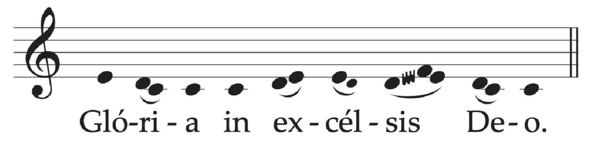
10. When the hymn is concluded, the Priest says the Collect in the usual way: Almighty everliving God, who willed, as here below.
11. Then the reader proclaims the reading from the Apostle (Rom 8: 22-27), and Mass continues in the usual way.
12. If Vespers (Evening Prayer) are joined to Mass, after Communion with the Communion Antiphon (On the last day), the Magnificat is sung, with its Vespers antiphon (Veni, Sancte Spiritus); then the Prayer after Communion is said and the rest follows as usual.
13. It is appropriate that the formula of Solemn Blessing be used.
To dismiss the people the Deacon or, if there is no Deacon, the Priest himself sings or says:
Or:
And the people reply:
At the Vigil Mass
This Mass is used on the Saturday evening, either before or after First Vespers (Evening Prayer I) of Pentecost Sunday
Entrance AntiphonRom 5: 5; cf. 8: 11
The love of God has been poured into our hearts
through the Spirit of God dwelling within us, alleluia.
The Gloria in excelsis (Glory to God in the highest) is said.
Collect
Almighty ever-living God,
who willed the Paschal Mystery
to be encompassed as a sign in fifty days,
grant that from out of the scattered nations
the confusion of many tongues
may be gathered by heavenly grace
into one great confession of your name.
Through our Lord Jesus Christ, your Son,
who lives and reigns with you in the unity of the Holy Spirit,
God, for ever and ever.
Or:
Grant, we pray, almighty God,
that the splendor of your glory
may shine forth upon us
and that, by the bright rays of the Holy Spirit,
the light of your light may confirm the hearts
of those born again by your grace.
Through our Lord Jesus Christ, your Son,
who lives and reigns with you in the unity of the Holy Spirit,
God, for ever and ever.
The Creed is said.
Prayer over the Offerings
Pour out upon these gifts the blessing of your Spirit,
we pray, O Lord,
so that through them your Church may be imbued with such love
that the truth of your saving mystery
may shine forth for the whole world.
Through Christ our Lord.
Preface of Pentecost as in the following Mass.
When the Roman Canon is used, the proper form of the Communicantes (In communion with those) is said.
Communion AntiphonJn 7: 37
On the last day of the festival, Jesus stood and cried out:
If anyone is thirsty, let him come to me and drink, alleluia.
Prayer after Communion
May these gifts we have consumed
benefit us, O Lord,
that we may always be aflame with the same Spirit,
whom you wondrously poured out on your Apostles.
Through Christ our Lord.
A formula of Solemn Blessing may be used.
To dismiss the people the Deacon, or, if there is no Deacon, the Priest himself sings (as above) or says:
Go forth, the Mass is ended, alleluia, alleluia.
Or:
Go forth in peace, alleluia, alleluia.
R. Thanks be to God, alleluia, alleluia.
At the Mass during the Day
Entrance AntiphonWis 1: 7
The Spirit of the Lord has filled the whole world
and that which contains all things
understands what is said, alleluia.
Or:Rom 5: 5; cf. 8: 11
The love of God has been poured into our hearts
through the Spirit of God dwelling within us, alleluia.
The Gloria in excelsis (Glory to God in the highest) is said.
Collect
O God, who by the mystery of today’s great feast
sanctify your whole Church in every people and nation,
pour out, we pray, the gifts of the Holy Spirit
across the face of the earth
and, with the divine grace that was at work
when the Gospel was first proclaimed,
fill now once more the hearts of believers.
Through our Lord Jesus Christ, your Son,
who lives and reigns with you in the unity of the Holy Spirit,
God, for ever and ever.
The Creed is said.
Prayer over the Offerings
Grant, we pray, O Lord,
that, as promised by your Son,
the Holy Spirit may reveal to us more abundantly
the hidden mystery of this sacrifice
and graciously lead us into all truth.
Through Christ our Lord.
Preface: The mystery of Pentecost.
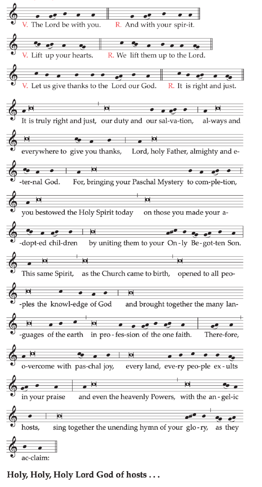
Text without music:
V. The Lord be with you.
R. And with your spirit.
V. Lift up your hearts.
R. We lift them up to the Lord.
V. Let us give thanks to the Lord our God.
R. It is right and just.
It is truly right and just, our duty and our salvation,
always and everywhere to give you thanks,
Lord, holy Father, almighty and eternal God.
For, bringing your Paschal Mystery to completion,
you bestowed the Holy Spirit today
on those you made your adopted children
by uniting them to your Only Begotten Son.
This same Spirit, as the Church came to birth,
opened to all peoples the knowledge of God
and brought together the many languages of the earth
in profession of the one faith.
Therefore, overcome with paschal joy,
every land, every people exults in your praise
and even the heavenly Powers, with the angelic hosts,
sing together the unending hymn of your glory,
as they acclaim:
Holy, Holy, Holy Lord God of hosts...
When the Roman Canon is used, the proper form of the Communicantes (In communion with those) is said.
Communion AntiphonActs 2: 4, 11
They were all filled with the Holy Spirit
and spoke of the marvels of God, alleluia.
Prayer after Communion
O God, who bestow heavenly gifts upon your Church,
safeguard, we pray, the grace you have given,
that the gift of the Holy Spirit poured out upon her
may retain all its force
and that this spiritual food
may gain her abundance of eternal redemption.
Through Christ our Lord.
To dismiss the people the Deacon or, if there is no Deacon, the Priest himself sings or says:
Or:
And the people reply:
With Easter Time now concluded, the paschal candle is extinguished. It is desirable to keep the paschal candle in the baptistery with due honor so that it is lit at the celebration of Baptism and the candles of those baptized are lit from it.
Where the Monday or Tuesday after Pentecost are days on which the faithful are obliged or accustomed to attend Mass, the Mass of Pentecost Sunday may be repeated, or a Mass of the Holy Spirit may be said.